<!doctype html>
<html lang="en">
<head>
  <meta charset="utf-8">
  <meta name="viewport" content="width=device-width, initial-scale=1">
  <title>arxiv digest — 2026-08-18</title>
  <style>
:root {
  --bg: #ffffff;
  --fg: #1f2328;
  --muted: #59636e;
  --border: #d0d7de;
  --card: #f6f8fa;
  --link: #0969da;
}
body {
  max-width: 980px;
  margin: 0 auto;
  padding: 2rem 1rem 5rem;
  font-family: -apple-system, BlinkMacSystemFont, "Segoe UI", Helvetica, Arial, sans-serif;
  line-height: 1.55;
  color: var(--fg);
  background: var(--bg);
}
a { color: var(--link); }
img { max-width: 100%; height: auto; }
pre, code { background: var(--card); border-radius: 6px; }
pre { padding: 1rem; overflow-x: auto; }
blockquote { border-left: 4px solid var(--border); padding-left: 1rem; color: var(--muted); }
details { margin: 0.6rem 0; }
summary { cursor: pointer; font-weight: 600; }
.paper-figures-scroll {
  display: flex;
  gap: 1rem;
  overflow-x: auto;
  overscroll-behavior-x: contain;
  padding: 0.75rem 0.25rem 1rem;
  margin: 1rem 0 1.25rem;
  border-top: 1px solid var(--border);
  border-bottom: 1px solid var(--border);
  scroll-snap-type: x proximity;
}
.paper-figure-card {
  flex: 0 0 min(260px, 72vw);
  scroll-snap-align: start;
  background: var(--card);
  border: 1px solid var(--border);
  border-radius: 12px;
  padding: 0.55rem;
}
.paper-figure-card img {
  display: block;
  width: 100%;
  max-height: 240px;
  object-fit: contain;
  background: white;
  border-radius: 8px;
}
.paper-figure-caption {
  display: block;
  margin-top: 0.5rem;
  color: var(--muted);
  font-size: 0.85rem;
}
.figure-strip-hint {
  color: var(--muted);
  font-size: 0.9rem;
  margin-bottom: -0.3rem;
}
</style>
  <!-- MathJax: renders $...$ inline math and $$...$$ display math, plus
       \(...\) and \[...\]. Loaded from the official CDN; works offline
       once cached. Configured to skip code/pre blocks so arxiv IDs that
       look like dollar amounts don't get mangled. -->
  <script>
    window.MathJax = {
      tex: {
        inlineMath: [['$', '$'], ['\\(', '\\)']],
        displayMath: [['$$', '$$'], ['\\[', '\\]']],
        processEscapes: true,
        processEnvironments: true
      },
      options: {
        skipHtmlTags: ['script', 'noscript', 'style', 'textarea', 'pre', 'code'],
        ignoreHtmlClass: 'tex2jax_ignore',
        processHtmlClass: 'tex2jax_process'
      }
    };
  </script>
  <script id="MathJax-script" async
    src="https://cdn.jsdelivr.net/npm/mathjax@3/es5/tex-chtml.js"></script>
</head>
<body>
<header style="background-color: #333; color: white; padding: 15px; margin-bottom: 20px;">
  <h1 style="margin: 0; font-size: 24px;">
    <a href="https://ochelpan.github.io/arXiv_clean/" style="color: white; text-decoration: none;">Main</a>
  </h1>
</header>

<h1>Daily arXiv Report</h1>

<hr>
<p>
<a href="index.html">← Index</a>
 · <a href="papers_01.html">← Previous</a> · <a href="papers_03.html">Next →</a>
</p>
<hr>

<h2>Papers 21–40</h2>
<p><a id="paper-2608.14503"></a></p>
<h3 id="chiral-spin-liquid-and-chiral-antiferromagnetism-in-half-filled-moire-hubbard-model-possible-applications-to-twisted-bilayer-tmds"><a href="http://arxiv.org/abs/2608.14503v1">Chiral spin liquid and chiral antiferromagnetism in half-filled moiré Hubbard model: possible applications to twisted bilayer TMDs</a></h3>
<p><strong>Authors:</strong> Chuyi Tuo, Hong Yao<br>
<strong>Type:</strong> theory · <strong>Category:</strong> strongly correlated electrons · <strong>PDF:</strong> <a href="https://arxiv.org/pdf/2608.14503v1">https://arxiv.org/pdf/2608.14503v1</a><br>
<strong>Analysis basis:</strong> full PDF text, analyzed in chunks
<strong>Topic relevance:</strong> 🔥 <code>analog quantum simulation</code> <strong>4/5</strong> · <code>Frenkel-Kontorova</code> <strong>1/5</strong> · <code>methods for driven-dissipative</code> <strong>1/5</strong></p>
<div class="figure-strip-hint">↔ Scroll figures horizontally</div>
<div class="paper-figures-scroll">
<figure class="paper-figure-card">
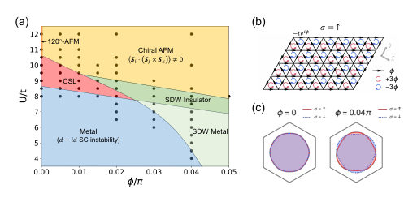
<figcaption class="paper-figure-caption"><b>Fig 1.</b> FIG. 1. (a) Ground state phase diagram of the half-filled moir´e Hubbard model in the strongly correlated regime, ob- tained by DMRG simulations on YC-48 × 4 cylinders. Black dots denote the simulated data points. The CSL to chiral AFM transition appears to be continuous within our numer- ical resolution. Additional Ly = 6 simulations are performed to assess finite-circumference effects. (b) Schematic illustra- tion of the staggered hopping flux pattern for spin up (σ =↑); the flux pattern is reversed for spin down (σ =↓) by time- reversal symmetry T . (c) Half-filled Fermi surfaces for both spins σ =↑, ↓at two representative displacement fields ϕ = 0 and ϕ = 0.04π, respectively.</figcaption>
</figure>
<figure class="paper-figure-card">
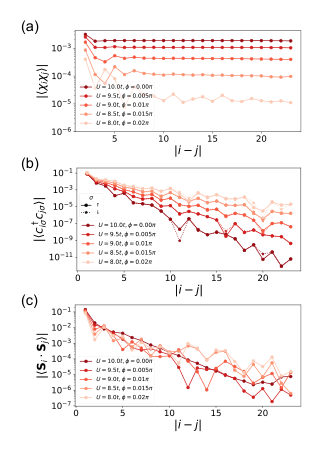
<figcaption class="paper-figure-caption"><b>Fig 2.</b> FIG. 2. Numerical evidence of the CSL phase on Ly = 4 cylin- ders along the parameter line cut indicated in the legends. (a) Scalar chirality correlation ⟨χiχj⟩. (b) Single-particle Green’s function ⟨c† iσcjσ⟩. (c) Spin correlation function ⟨Si · Sj⟩.</figcaption>
</figure>
<figure class="paper-figure-card">
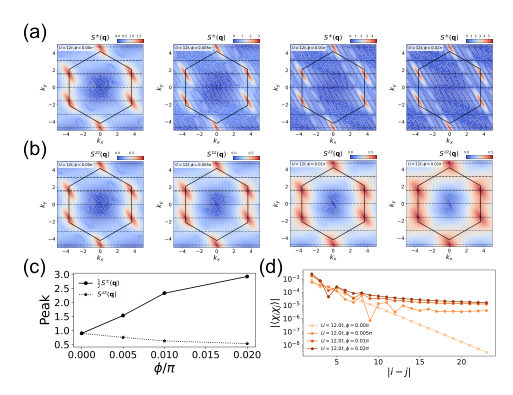
<figcaption class="paper-figure-caption"><b>Fig 3.</b> FIG. 3. Characterization of the strong-coupling chiral AFM phase at U/t = 12 for different displacement fields ϕ on Ly = 4 cylinders. (a, b) Spin structure factors S+−(q) and Szz(q). (c) Peak values of S+−(q) and Szz(q) as a function of ϕ. (d) Scalar chirality correlation ⟨χiχj⟩.</figcaption>
</figure>
<figure class="paper-figure-card">
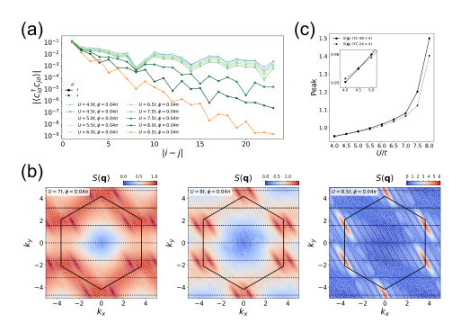
<figcaption class="paper-figure-caption"><b>Fig 4.</b> FIG. 4. Metal-insulator transition and IC-SDW phases at finite displacement field ϕ = 0.04π for different interaction strengths U/t on Ly = 4 cylinders. (a) Single-particle Green’s function ⟨c† iσcjσ⟩. (b) Spin structure factor S(q) at represen- tative values of U/t = 7, 8, and 8.5. (c) Peak values of S(q) as a function of U/t for two different system sizes.</figcaption>
</figure>
</div>

<p><strong>Summary.</strong> The authors use DMRG simulations to study the moiré Hubbard model, focusing on how a displacement field alters the electronic ground state. They find that this field suppresses the Chiral Spin Liquid phase while stabilizing a chiral antiferromagnetic order characterized by long-range chirality. The results offer crucial theoretical insights into correlated physics in twisted 2D materials.</p>
<p><strong>Why it may be interesting.</strong> This work models complex many-body physics in tunable solid-state platforms (TMDs), providing theoretical guidance on how external fields can drive transitions between exotic quantum states like CSLs and ordered magnetic phases.</p>
<details>
<summary>Detailed structure</summary>
<p><strong>Main problem.</strong> The study investigates how a displacement field affects the competing electronic phases, specifically the Chiral Spin Liquid (CSL) and chiral antiferromagnetism, in moiré superlattices.</p>
<p><strong>Main result.</strong> The displacement field destabilizes the CSL phase rapidly but induces pronounced chiral correlations, leading to a continuous transition into a chiral AFM state. The model also predicts an Incommensurate Spin-Density Wave (IC-SDW) Metal-Insulator Transition at intermediate couplings.</p>
<p><strong>Method.</strong> Large-scale Density Matrix Renormalization Group (DMRG) simulations are employed on cylinder geometries to map the phase diagram and characterize magnetic correlations.</p>
<p><strong>Model / system.</strong> The system is a half-filled moiré Hubbard model applied to twisted transition metal dichalcogenides (TMDs). The Hamiltonian includes terms capturing hopping modulated by a spin-dependent staggered flux representing the displacement field effect.</p>
<p><strong>Key observables.</strong> Scalar chirality correlation function, single-particle Green’s function, and various spin structure factors ($S^{+-}(\mathbf{q})$, $S_{zz}(\mathbf{q})$).</p>
<p><strong>Important parameters / regimes.</strong> Displacement field ($\phi$), interaction strength ratio ($U/t$), and lattice geometry (triangular lattice on moiré superlattice).</p>
<p><strong>Assumptions / limitations.</strong> The study relies on DMRG simulations, which have limitations in resolving very long-distance correlations, especially in metallic regimes.</p>
<p><strong>Figures summary.</strong> Figures illustrate the ground state phase diagram showing CSL to chiral AFM transitions; other figures provide numerical evidence of chirality correlation evolution and magnetic structure factors at different coupling strengths and flux values.</p>
<p><strong>Paper structure.</strong> The paper systematically analyzes the effect of the displacement field on the Hubbard model, first establishing the general phase diagram, then detailing the continuous transition between CSL and chiral AFM, and finally investigating the IC-SDW Metal-Insulator Transition across varying parameters.</p>
</details>
<details>
<summary>Abstract</summary>
<p>Twisted transition metal dichalcogenides offer an exceptionally tunable moiré platform for studying correlation physics beyond conventional condensed matter systems. In particular, the intriguing interplay between the displacement field and the twist angle remains to be fully resolved. In this paper, we use large-scale density matrix renormalization group simulations to study the minimal moiré Hubbard model on a triangular lattice at half-filling, where the displacement field effect is captured by a spin-dependent staggered flux. We find that the displacement field significantly enriches the triangular Hubbard phase diagram in several qualitative ways. It rapidly destabilizes the chiral spin liquid phase beyond a narrow weak-field regime, induces pronounced chiral correlations in the strong-coupling $120^\circ$-antiferromagnetic phase, and stabilizes incommensurate spin-density wave phases at weaker coupling. We further find signatures of a continuous transition between the chiral spin liquid and chiral antiferromagnetic phases at a finite displacement field, potentially driven by spinon condensation. Our results uncover rich displacement-field-driven many-body physics and provide useful guidance for future experiments in moiré superlattice systems.</p>
</details>
<p><sub><a href="#top">↑ back to top</a></sub></p>

<p><a id="paper-2608.14285"></a></p>
<h3 id="qu-trefoil-large-scale-quantum-circuit-simulator-working-on-fpga-with-sata-storages"><a href="http://arxiv.org/abs/2608.14285v1">Qu-Trefoil: Large-Scale Quantum Circuit Simulator Working on FPGA With SATA Storages</a></h3>
<p><strong>Authors:</strong> Kaijie Wei, Hideharu Amano, Ryohei Niwase, Yoshiki Yamaguchi, Takefumi Miyoshi<br>
<strong>Type:</strong> experiment · <strong>Category:</strong> quantum information and computing · <strong>PDF:</strong> <a href="https://arxiv.org/pdf/2608.14285v1">https://arxiv.org/pdf/2608.14285v1</a><br>
<strong>Analysis basis:</strong> full PDF text, analyzed in chunks
<strong>Topic relevance:</strong> 🔥 <code>QC/QI experiment</code> <strong>4/5</strong> · <code>analog quantum simulation</code> <strong>1/5</strong> · <code>quantum measurements</code> <strong>1/5</strong></p>
<div class="figure-strip-hint">↔ Scroll figures horizontally</div>
<div class="paper-figures-scroll">
<figure class="paper-figure-card">
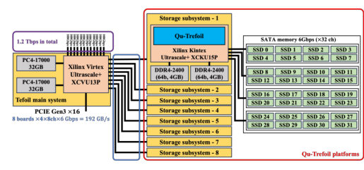
<figcaption class="paper-figure-caption"><b>Fig 1.</b> Fig. 1. Trefoil’s main system connecting to eight storage subsystems, offering 1.2 Tbps network access, 192GB/s storage throughput, and a total capacity of 2 PBytes using 8 TB SATA disks; Each storage subsystem equipped with an embedded Qu-Trefoil system</figcaption>
</figure>
<figure class="paper-figure-card">
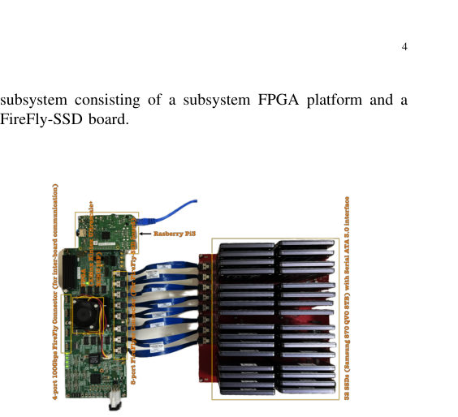
<figcaption class="paper-figure-caption"><b>Fig 2.</b> Fig. 2. Trefoil’s storage subsystem phototype</figcaption>
</figure>
<figure class="paper-figure-card">
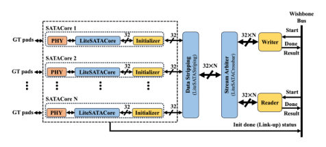
<figcaption class="paper-figure-caption"><b>Fig 3.</b> Fig. 3. Sample design for LiteSATA working on multiple LiteSATACores</figcaption>
</figure>
<figure class="paper-figure-card">
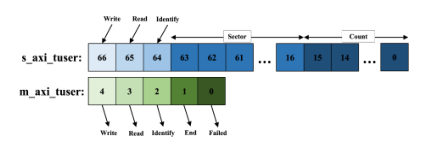
<figcaption class="paper-figure-caption"><b>Fig 4.</b> Fig. 4. User signal specifications for transceiver and receiver</figcaption>
</figure>
<figure class="paper-figure-card">
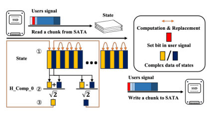
<figcaption class="paper-figure-caption"><b>Fig 5.</b> Fig. 6. 𝐻_0 implementation with pipelining the reading and computation</figcaption>
</figure>
</div>

<p><strong>Summary.</strong> This paper introduces Qu-Trefoil, a novel, cost-effective hardware simulator built on FPGAs and massive SATA storage arrays. It overcomes the exponential memory bottleneck of state-vector simulation by distributing the required petabytes of data across external disks. This allows researchers to simulate quantum circuits with over 43 qubits, making large-scale quantum computation accessible outside of dedicated supercomputing facilities.</p>
<p><strong>Why it may be interesting.</strong> While focused on hardware, the ability to simulate complex quantum dynamics up to 43 qubits provides crucial benchmarks and feasibility studies for theoretical models involving large Hilbert spaces that might be relevant to open quantum systems or many-body physics simulations.</p>
<details>
<summary>Detailed structure</summary>
<p><strong>Main problem.</strong> State-vector simulation of quantum circuits suffers from exponential memory requirements ($2^n$ bytes), limiting simulations to small numbers of qubits without supercomputers.</p>
<p><strong>Main result.</strong> The Qu-Trefoil system successfully simulated quantum circuits with over 43 qubits, requiring $>128$ TB of memory, demonstrating a significant milestone in accessible large-scale simulation.</p>
<p><strong>Method.</strong> The authors designed and implemented a specialized hardware platform using FPGAs connected to massive SATA disk arrays to store the exponentially growing state vectors during circuit evolution.</p>
<p><strong>Model / system.</strong> The system is Qu-Trefoil, built on an FPGA-based Trefoil platform utilizing multiple SATA SSDs for storage. It simulates quantum circuits using state-vector representation and implements universal gates like H, Z, S, CNOT, and T via HLS/HDL.</p>
<p><strong>Key observables.</strong> Simulation time (3.72 to 13.06 hours on a single subsystem), qubit count (over 43 qubits), and total memory capacity (up to 2 PBytes).</p>
<p><strong>Important parameters / regimes.</strong> Qubit number ($n$), required memory ($\propto 2^n$), storage throughput (e.g., $192 	ext{ GB/s}$ for a full system).</p>
<p><strong>Assumptions / limitations.</strong> The primary bottleneck is the slow data access speed of SATA disks compared to high-performance memories, and the simulation relies on state-vector representation.</p>
<p><strong>Figures summary.</strong> Figures detail the prototype architecture (Trefoil subsystem) and performance comparisons against state-of-the-art simulators across various qubit counts.</p>
<p><strong>Paper structure.</strong> The paper follows a standard scientific structure: background/problem definition, detailed platform description (Qu-Trefoil/Trefoil), methodology for gate implementation, experimental evaluation of performance metrics, and conclusion.</p>
</details>
<details>
<summary>Abstract</summary>
<p>Quantum circuits are fundamental components of quantum computing, and state-vector-based quantum circuit simulation is a widely used technique for tracking qubit behavior throughout circuit evolution. However, simulating a circuit with $n$ qubits requires $2^{n+4}$ bytes of memory, making simulations of more than 40 qubits feasible only on supercomputers. To address this limitation, we propose the Qu-Trefoil, a system designed for large-scale quantum circuit simulations on an FPGA-based platform called Trefoil. Trefoil is a multi-FPGA system connected to eight storage subsystems, each equipped with 32 SATA disks. Qu-Trefoil integrates a suite of HLS-based universal quantum gates, including Clifford gates (Hadamard (H), Pauli-Z (Z), Phase (S), Controlled-NOT (CNOT)), the T gate, and unitary matrix computation, along with HDL-designed modules for system-wide integration. Our extensive evaluation demonstrates the system's robustness and flexibility, covering quantum gate performance, chunk size, disk extensibility, and efficiency across different SATA generations. We successfully simulated quantum circuits with over 43 qubits, which required more than 128 TB of memory, in approximately 3.72 to 13.06 hours on a single storage subsystem equipped with one FPGA. This achievement represents a significant milestone in the advancement of quantum computing simulations. Furthermore, thanks to its unique architecture, Qu-Trefoil is more accessible, flexible, and cost-efficient than other existing simulators for large-scale quantum circuit simulations, making it a viable option for researchers with limited access to supercomputers.</p>
</details>
<p><sub><a href="#top">↑ back to top</a></sub></p>

<p><a id="paper-2608.14357"></a></p>
<h3 id="native-multi-qubit-gates-on-a-single-junction-unimon-circuit"><a href="http://arxiv.org/abs/2608.14357v1">Native multi-qubit gates on a single-junction unimon circuit</a></h3>
<p><strong>Authors:</strong> Sasu Tuohino, Mikko Möttönen, Matti Silveri<br>
<strong>Type:</strong> theory · <strong>Category:</strong> quantum information and computing · <strong>PDF:</strong> <a href="https://arxiv.org/pdf/2608.14357v1">https://arxiv.org/pdf/2608.14357v1</a><br>
<strong>Analysis basis:</strong> full PDF text, analyzed in chunks
<strong>Topic relevance:</strong> 🔥 <code>QC/QI experiment</code> <strong>4/5</strong> · <code>quantum measurements</code> <strong>1/5</strong></p>
<div class="figure-strip-hint">↔ Scroll figures horizontally</div>
<div class="paper-figures-scroll">
<figure class="paper-figure-card">
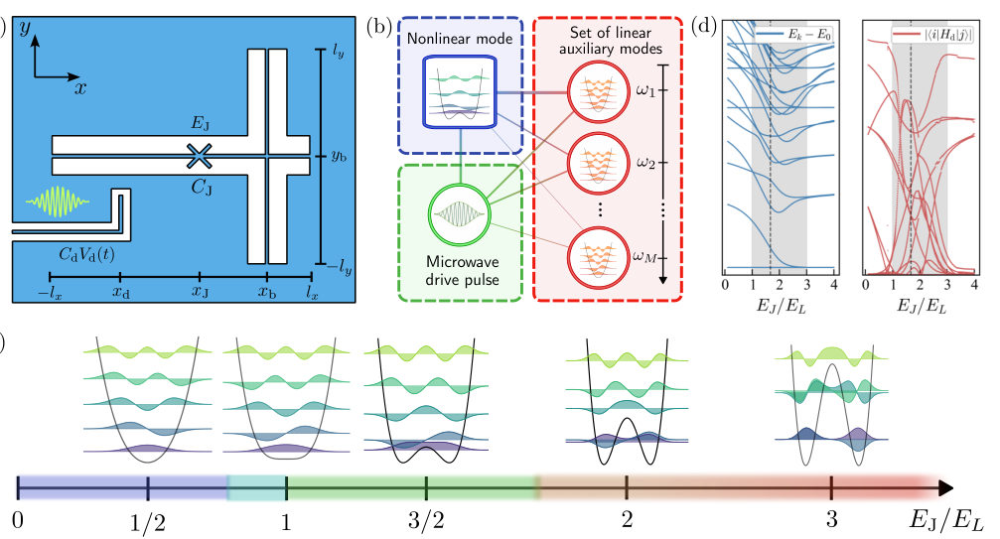
<figcaption class="paper-figure-caption"><b>Fig 1.</b> FIG. 1. (a) Schematic top view of a single-junction multiunimon device with a capacitively coupled drive line. Blue color denotes thin-film superconducting metal and white the regions the absence of metal. The cross at (xJ, yb) denotes the Josephson junction. (b) Bare mode structure of the auxiliary-mode model. The auxiliary modes couple to the nonlinear mode but not to each other, while the microwave drive couples to all modes. The coupling decreases for higher-frequency modes. (c) Potential landscape of the nonlinear mode in different regimes of the Josephson-to-inductive energy ratio EJ/EL. (d) Eigenenergies and drive matrix elements as a function of EJ/EL. The gray area highlights the...</figcaption>
</figure>
<figure class="paper-figure-card">
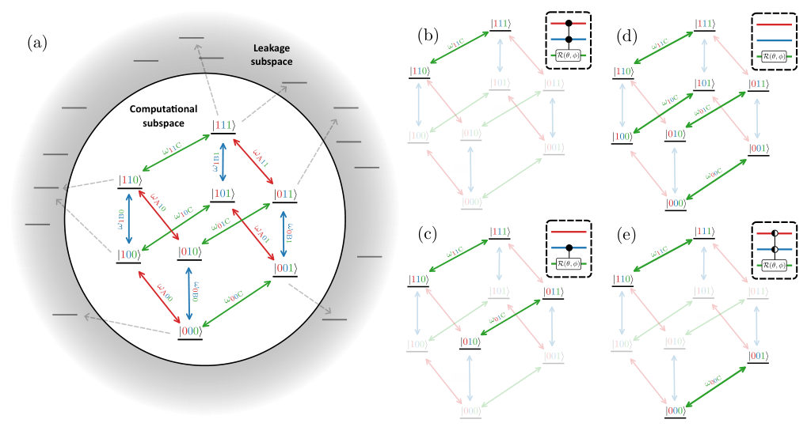
<figcaption class="paper-figure-caption"><b>Fig 2.</b> FIG. 2. (a) Three-qubit computational subspace of the multiunimon and the twelve native CCR gate connections within it. The computational states form a cube, with vertices corresponding to computational states and edges to transitions activated by native gates. Edges are color-coded by the target qubit; each target qubit has four edges, one per control-qubit configuration. Faint dashed arrows indicate possible leakage out of the computational subspace. (b) A microwave pulse at frequency ω11C rotates the target qubit only if both control qubits are in state |1⟩. This corresponds to a single CCR gate. (c) Adding a drive at frequency ω01C removes the conditionality on one of the control...</figcaption>
</figure>
<figure class="paper-figure-card">
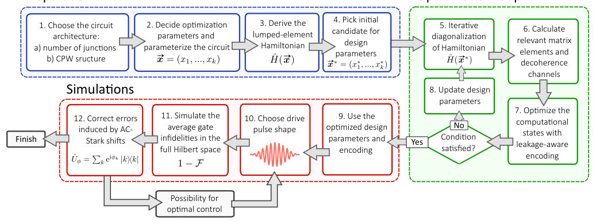
<figcaption class="paper-figure-caption"><b>Fig 3.</b> FIG. 3. Full workflow for multiunimon optimization and gate simulation. The workflow consists of three distinct parts: preparation, optimization, and simulation. In the preparation part, we choose the circuit architecture and model parameters, and derive the corresponding Hamiltonian. The optimization loop searches for the optimal parameters and encoding using the leakage-aware metric. Once a suitable candidate is found, the properties of the optimized multiunimon are passed to full simulations, where the phase-corrected average gate infidelities are calculated for a chosen pulse shape.</figcaption>
</figure>
<figure class="paper-figure-card">
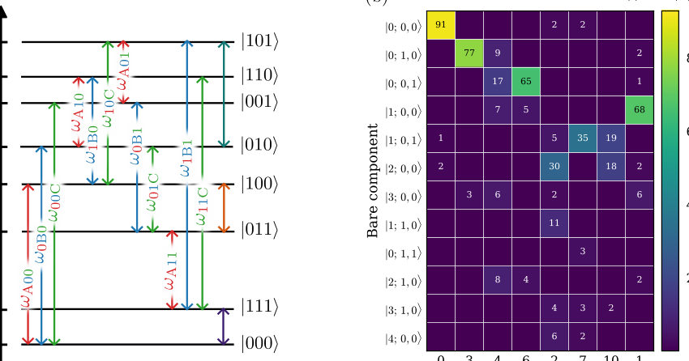
<figcaption class="paper-figure-caption"><b>Fig 4.</b> FIG. 4. (a) Energy-level diagram of the computational states, drawn to scale, with the native gate transition frequencies indicated. The three rightmost transitions are the extended gate-set transitions enabled by the leakage-aware encoding. (b) Bare- component contributions to each computational eigenstate. The bare components are the product states of the nonlinear and linear auxiliary modes [Eqs. (2) and (3)], denoted as |n; i, j⟩, where n is the excitation number of the nonlinear mode and {i, j} are the excitation numbers of the two lowest-frequency auxiliary modes. The overlaps |⟨n; i, j|k⟩|2 with each computational eigenstate |k⟩are shown as percentages, with values below 1% omitted.</figcaption>
</figure>
<figure class="paper-figure-card">
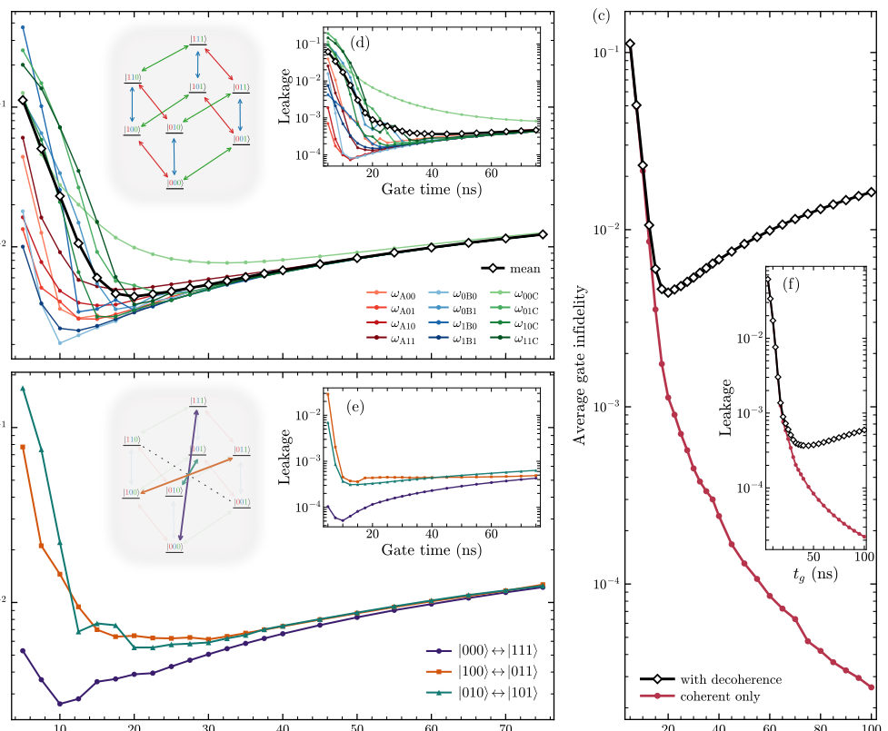
<figcaption class="paper-figure-caption"><b>Fig 5.</b> FIG. 5. (a)–(c) Simulated average gate infidelities (AGI) for π rotations as functions of gate time. (a) AGIs for the indicated native CCNOT gates each corresponding to an edge of the cube shown in the inset; the mean across all twelve CCNOTs is shown as a black curve. (b) AGIs for the three transitions corresponding to the indicated diagonals of the cube shown in the inset. (c) Mean AGI over the twelve CCNOT gates considered in (a) as a function of gate time, with (black color) and without (red color) incoherent errors. The black curve corresponds to that in (a), and the red curve includes only coherent errors such as leakage (see inset) and crosstalk from off-resonant driving. (d)–(f)...</figcaption>
</figure>
</div>

<p><strong>Summary.</strong> This paper introduces the 'multiunimon,' a novel superconducting circuit built from a single Josephson junction capable of hosting multiple qubits. By employing advanced encoding and simulation techniques, the authors demonstrate that this device can natively implement high-fidelity three-qubit gates like CCNOTs. This work advances the feasibility of building highly connected quantum processors using minimal physical components.</p>
<p><strong>Why it may be interesting.</strong> The work provides a concrete physical realization (single junction) for achieving complex, native three-qubit gates, which is highly relevant to superconducting circuit QED research in quantum information.</p>
<details>
<summary>Detailed structure</summary>
<p><strong>Main problem.</strong> The primary goal is developing quantum processors capable of executing near-term quantum algorithms efficiently by incorporating native multi-qubit gates.</p>
<p><strong>Main result.</strong> The proposed multiunimon circuit successfully simulates all twelve required controlled-controlled-NOT (CCNOT) gates with a high mean fidelity of 99.5%, demonstrating its potential as a highly connected unit.</p>
<p><strong>Method.</strong> The authors utilized Hamiltonian simulation and iterative diagonalization techniques, employing a leakage-aware encoding scheme to map physical states onto computational qubits.</p>
<p><strong>Model / system.</strong> The system is the 'multiunimon,' a superconducting multimode circuit built around a single Josephson junction embedded in a coplanar waveguide structure. The physics is governed by a total Hamiltonian combining nonlinear junction, CPW linear modes, and coupling terms.</p>
<p><strong>Key observables.</strong> Mean fidelity of multi-qubit gates (e.g., 99.56% for $\pi$-rotations), single-step GHZ state preparation fidelity (99.74%).</p>
<p><strong>Important parameters / regimes.</strong> The design is optimized in the intermediate 'shallow double-well' regime ($E_J/EL > 1$), and performance is limited by dielectric loss.</p>
<p><strong>Assumptions / limitations.</strong> The primary limitation noted is dielectric loss, though simulations suggest fidelities approaching 99.99% are achievable with improved noise protection and pulse shaping.</p>
<p><strong>Figures summary.</strong> Figures illustrate the device schematic (single junction on CPW), the bare mode structure of the auxiliary modes, and the potential energy landscape dependence on the Josephson-to-inductive energy ratio ($E_J/EL$).</p>
<p><strong>Paper structure.</strong> The paper introduces the multiunimon concept to address native gate requirements. It details the Hamiltonian decomposition ($\hat{H}_{JJ} + \hat{H}_{CPW} + \hat{H}_{int} + \hat{H}_d(t)$), explains the use of leakage-aware encoding, and presents simulation results demonstrating high-fidelity multi-qubit gate operations.</p>
</details>
<details>
<summary>Abstract</summary>
<p>Quantum processors with native multi-qubit gates may offer very efficient implementations of near-term quantum algorithms on noisy hardware. Here, we introduce the multiunimon, a superconducting multimode circuit that encodes multiple qubits and enables native multi-qubit gates in a device consisting of a single Josephson junction embedded in a coplanar waveguide structure. Closely related to the unimon qubit, it inherits properties such as high anharmonicity, full protection against low-frequency charge noise, and partial protection against flux noise. By designing such a three-qubit device with Josephson-to-inductive energy ratio above unity and using a leakage-aware encoding scheme for the computational states, we simulate all twelve different controlled-controlled-NOT gates with a mean fidelity of 99.5% with simple sine-squared pulses of comparable length to single-qubit gates. The performance is limited by incoherent errors dominated by dielectric loss. With improvements in noise protection, design, and pulse shaping, the simulations suggest that fidelities approaching 99.99% are within reach. Our results demonstrate the potential of the multiunimon as a highly connected multi-qubit unit for larger superconducting quantum processors.</p>
</details>
<p><sub><a href="#top">↑ back to top</a></sub></p>

<p><a id="paper-2608.14180"></a></p>
<h3 id="topological-phases-and-quantum-criticality-from-math226math-chern-simons-matter-theories"><a href="http://arxiv.org/abs/2608.14180v1">Topological phases and quantum criticality from $SU(2)$ Chern-Simons-matter theories</a></h3>
<p><strong>Authors:</strong> Yunchao Hao, Yingcheng Li, Kangle Li, Liujun Zou<br>
<strong>Type:</strong> theory · <strong>Category:</strong> strongly correlated electrons · <strong>PDF:</strong> <a href="https://arxiv.org/pdf/2608.14180v1">https://arxiv.org/pdf/2608.14180v1</a><br>
<strong>Analysis basis:</strong> full PDF text, analyzed in chunks
<strong>Topic relevance:</strong> <code>Keldysh / 2PI / non-Gaussian methods</code> <strong>3/5</strong> · <code>analog quantum simulation</code> <strong>3/5</strong> · <code>driven-dissipative phase transition</code> <strong>2/5</strong> · <code>methods for driven-dissipative</code> <strong>2/5</strong> · <code>non-equilibrium universality</code> <strong>2/5</strong> · <code>correlated / nonlocal dissipation</code> <strong>1/5</strong> · <code>quantum measurements</code> <strong>1/5</strong></p>
<div class="figure-strip-hint">↔ Scroll figures horizontally</div>
<div class="paper-figures-scroll">
<figure class="paper-figure-card">
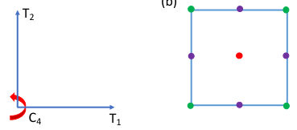
<figcaption class="paper-figure-caption"><b>Fig 1.</b> FIG. 1. (a) Symmetry generators of the p4 space group, where T1 and T2 are translation vectors along two orthogonal directions, and C4 is a 4-fold rotation. (b) The irreducible Wyckoff positions of a p4 symmetric lattice. a, b and c can be viewed as the rotation centers of C4, T1C4, and T1C2 4 (also T2C2 4), respectively. Alternatively, a can be viewed as the vertices of a square lattice, b can be viewed as the plaquette centers of a square lattice, and c can be viewed as the edge centers of a square lattice.</figcaption>
</figure>
<figure class="paper-figure-card">
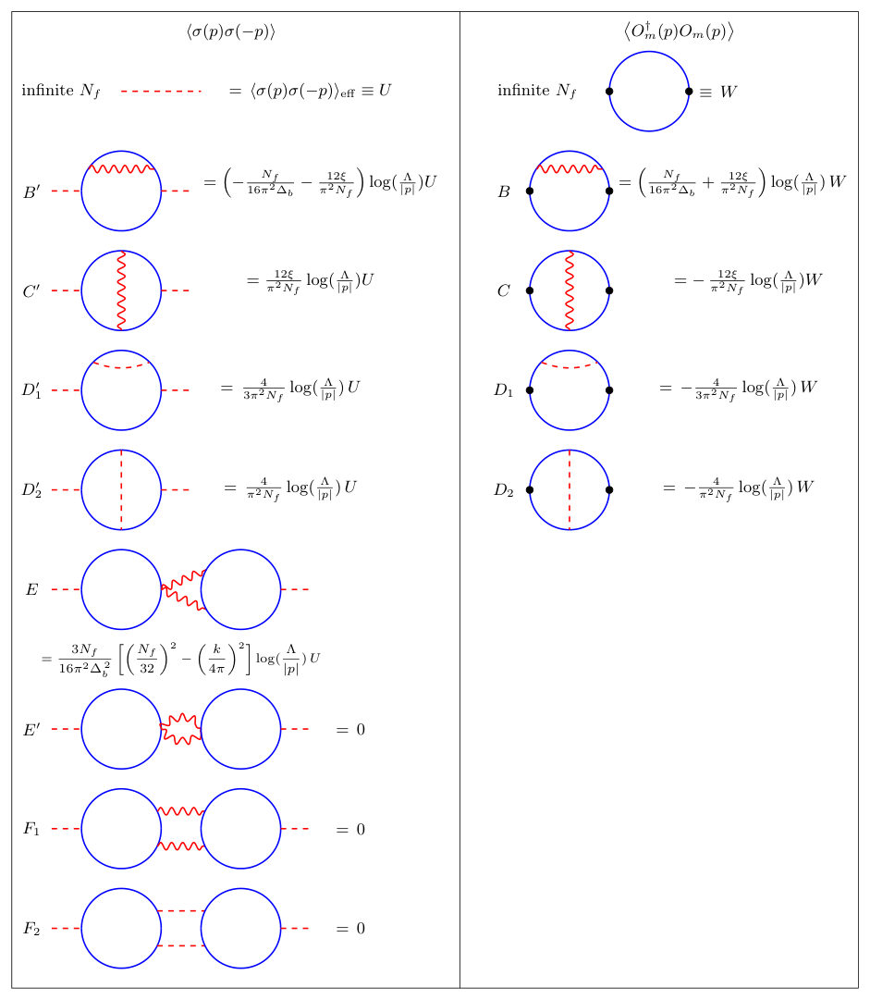
<figcaption class="paper-figure-caption"><b>Fig 2.</b> FIG. 2. O(1/Nf) Feynman graphs contributing to ⟨˜σ(p)˜σ(−p)⟩(left) and ⟨O† m(p)Om(p)⟩(right). Here blue solid lines represent G0(p) = 1/p2, red dashed lines represent the propagator of ˜σ in Eq. (C25) and red wavy lines represent the propagator of the gauge field in Eq. (C26). Gauge-parameter (ξ) dependence cancels between B and C (B′ and C′). In the above, only the logarithmically divergent parts are retained.</figcaption>
</figure>
<figure class="paper-figure-card">
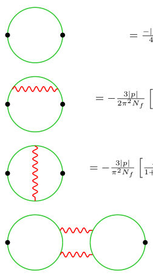
<figcaption class="paper-figure-caption"><b>Fig 3.</b> FIG. 3. Feynman diagrams contributing to the two-point functions of the flavor-singlet mass operator OS and the antisymmetric-traceless mass operator OA0 in the fermionic matter theory. Diagram A is the leading-order contribution, while B and C give the single-trace corrections at order O(1/Nf). The diagram B also has a reflected counterpart with the same value. Diagram D is the double-trace contribution and occurs only for OS; it vanishes for OA0 because the corresponding flavor generator is traceless. Green solid lines represent free fermion propagators, red wavy lines represent the effective gauge-field propagator in Eq. (D10), and black dots denote mass-operator insertions. Only the...</figcaption>
</figure>
</div>

<p><strong>Summary.</strong> This paper provides a comprehensive theoretical study of topological phases and quantum critical points in 2D systems governed by SU(2) Chern-Simons theories. It classifies symmetry-protected topological orders based on lattice symmetries and calculates the scaling dimensions of key operators using advanced field theory techniques. The results guide the understanding of emergent exotic states in strongly correlated matter.</p>
<p><strong>Why it may be interesting.</strong> The detailed analysis of topological order, quantum criticality, and emergent symmetries in low-dimensional strongly correlated systems is highly relevant to understanding exotic phases found in materials science.</p>
<details>
<summary>Detailed structure</summary>
<p><strong>Main problem.</strong> The study analytically investigates topological phases and quantum criticality arising in two-dimensional systems described by SU(2) Chern-Simons-matter theories.</p>
<p><strong>Main result.</strong> The paper provides detailed classifications of symmetry-enriched topological (SET) phases based on the Chern-Simons level k, and calculates scaling dimensions for various operators in the large-$N_f$ and large-$k$ limits.</p>
<p><strong>Method.</strong> Methods include classifying topological orders using symmetry data (U-symbols, $\eta$-symbols), applying anomaly matching principles, and performing perturbative calculations of correlation functions up to $1/N_f$.</p>
<p><strong>Model / system.</strong> The models involve two-dimensional lattice spin systems with p4 x SO(3) symmetry exhibiting SU(2)_k topological order, coupled to gapless bosonic or fermionic matter fields described by Chern-Simons theories.</p>
<p><strong>Key observables.</strong> Scaling dimensions of bilinear operators ($\Delta_{\sigma}, \gamma_{O_m}$), correlation functions like $\langle OS(p)OS(-p) 
angle$, and the number/type of SET phases.</p>
<p><strong>Important parameters / regimes.</strong> The Chern-Simons level k (odd vs. even), the number of matter flavors $N_f$, and the ratio $N_f/k$ in the large limit.</p>
<p><strong>Assumptions / limitations.</strong> Calculations are performed perturbatively up to order $1/N_f$; the classification relies on mapping lattice systems to specific homotopy classes; some results assume a joint large-$N_f$ and large-$k$ limit.</p>
<p><strong>Figures summary.</strong> Figure 1 illustrates symmetry generators for the p4 space group. Figures 2 and 3 show Feynman diagrams contributing to correlation functions of various operators ($   ilde{\sigma}, O_S, O_{A0}$).</p>
<p><strong>Paper structure.</strong> The paper proceeds by first classifying SET phases based on symmetry constraints (Chunk 2), then analyzing the critical theory via perturbative calculations of scaling dimensions for bosonic and fermionic matter couplings (Chunks 3 &amp; 4).</p>
</details>
<details>
<summary>Abstract</summary>
<p>Motivated by recent numerical studies where various $SU(2)$ Chern-Simons-matter theories emerge, we analytically study topological phases and quantum criticality in two-dimensional systems described by such theories. First, we classify $SU(2)_k$ topological orders in all lattice spin systems with a $p4\times SO(3)$ symmetry, where $k$ is an arbitrary nonzero integer. We find that for each odd $k$, the topological order can emerge in systems with an arbitrary Lieb-Schultz-Mattis (LSM) anomaly, and the symmetry cannot permute anyons. If the system has a nontrivial (respectively, trivial) LSM anomaly, then there is exactly one (respectively, nine) symmetry-enriched topological (SET) phases. On the other hand, $SU(2)_k$ topological order with any even $k$ can only emerge in systems with a trivial LSM anomaly. If $k\notin\{6, 10, 14, \cdots\}$, the symmetry cannot permute anyons, and there are 16 SET phases. If $k\in\{6, 10, 14, \cdots\}$, there are 4 different ways how the symmetry can permute anyons, and there are 64 SET phases. Next, we analyze the $SU(2)_k$ Chern-Simons theories coupled to $N_f$ flavors of gapless matter fields that can be either bosonic or fermionic. For both types of theories, we consider a joint large-$N_f$ and large-$k$ limit with $N_f/k$ fixed, and compute the scaling dimensions of the bilinear operators of the bosons or fermions to the order of $1/N_f$. These results sharpen our understanding of these emergent exotic topological phases and quantum criticality, and provide useful guidance to explore them further.</p>
</details>
<p><sub><a href="#top">↑ back to top</a></sub></p>

<p><a id="paper-2608.13894"></a></p>
<h3 id="de-broglie-bohm-dynamics-with-schrodinger-source-fields-a-framework-for-subquantum-theory"><a href="http://arxiv.org/abs/2608.13894v1">de Broglie-Bohm Dynamics with Schrödinger Source Fields: A Framework for Subquantum Theory</a></h3>
<p><strong>Authors:</strong> Said Mikki<br>
<strong>Type:</strong> theory · <strong>Category:</strong> statistical mechanics · <strong>PDF:</strong> <a href="https://arxiv.org/pdf/2608.13894v1">https://arxiv.org/pdf/2608.13894v1</a><br>
<strong>Analysis basis:</strong> full PDF text, analyzed in chunks
<strong>Topic relevance:</strong> <code>methods for driven-dissipative</code> <strong>3/5</strong> · <code>non-equilibrium universality</code> <strong>3/5</strong> · <code>driven-dissipative phase transition</code> <strong>2/5</strong> · <code>quantum measurements</code> <strong>2/5</strong> · <code>Keldysh / 2PI / non-Gaussian methods</code> <strong>1/5</strong> · <code>correlated / nonlocal dissipation</code> <strong>1/5</strong> · <code>scars &amp; prethermalization</code> <strong>1/5</strong></p>
<div class="figure-strip-hint">↔ Scroll figures horizontally</div>
<div class="paper-figures-scroll">
<figure class="paper-figure-card">
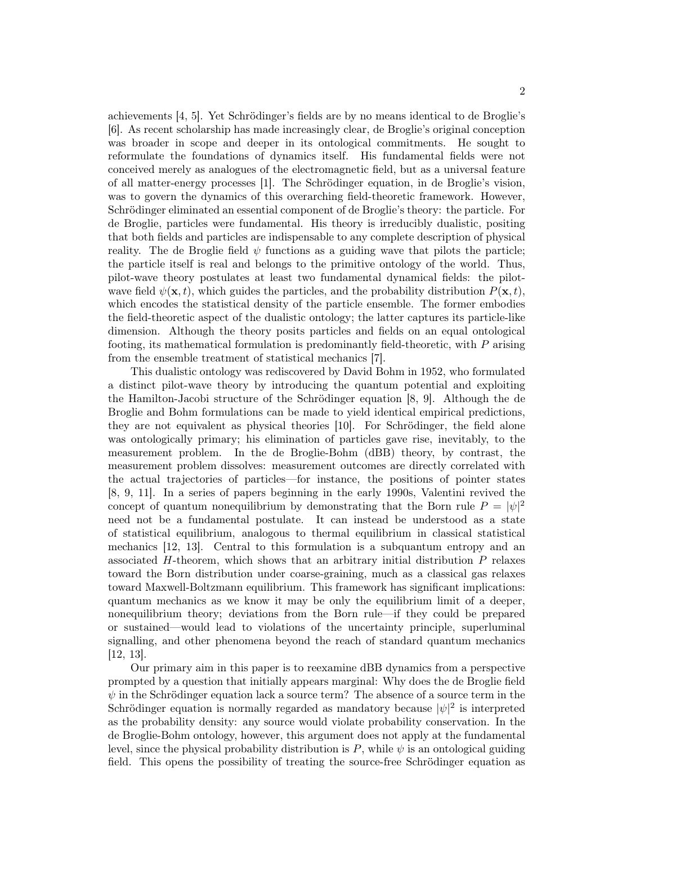
<figcaption class="paper-figure-caption"><b>Fig 1.</b> Low-resolution page preview, page 2</figcaption>
</figure>
<figure class="paper-figure-card">
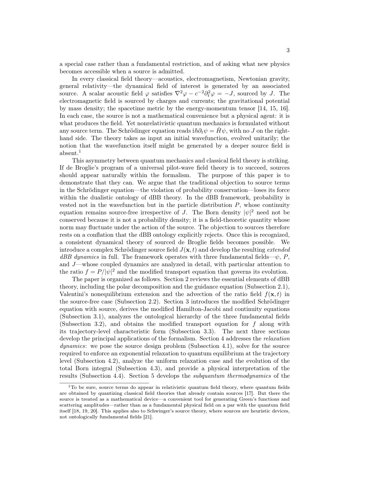
<figcaption class="paper-figure-caption"><b>Fig 2.</b> Low-resolution page preview, page 3</figcaption>
</figure>
<figure class="paper-figure-card">
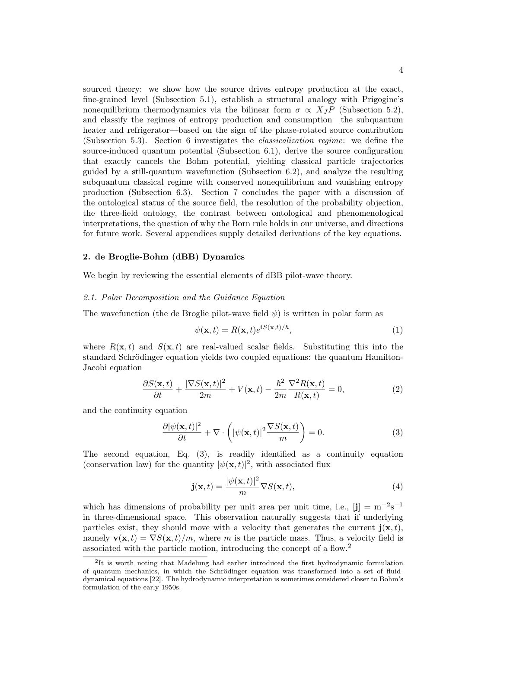
<figcaption class="paper-figure-caption"><b>Fig 3.</b> Low-resolution page preview, page 4</figcaption>
</figure>
<figure class="paper-figure-card">
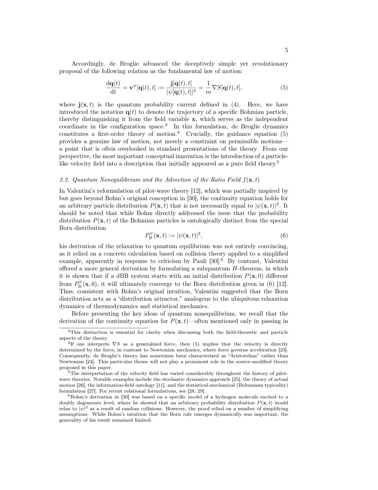
<figcaption class="paper-figure-caption"><b>Fig 4.</b> Low-resolution page preview, page 5</figcaption>
</figure>
<figure class="paper-figure-card">
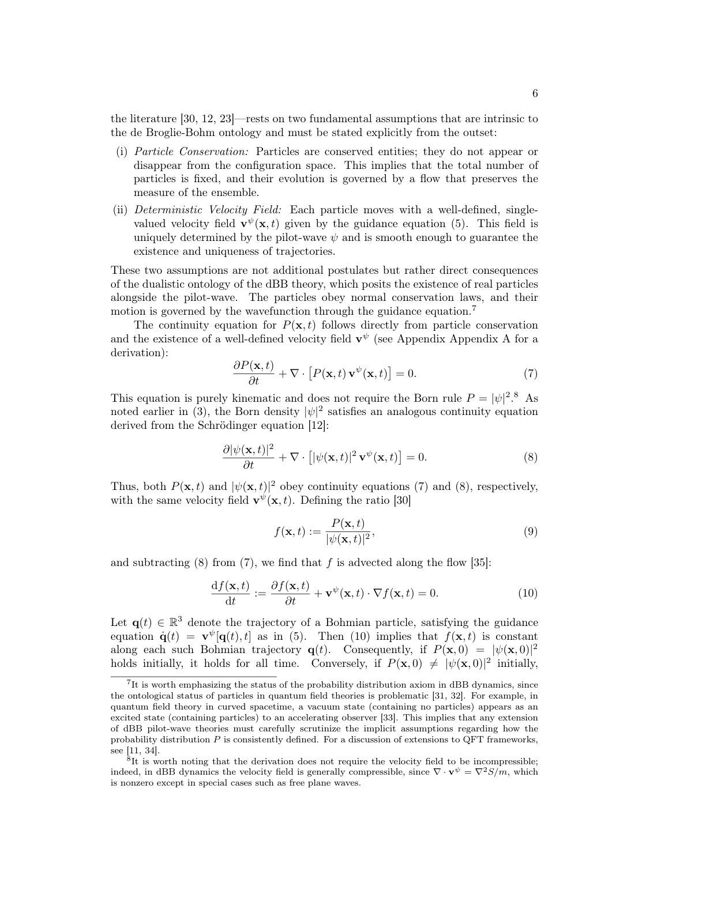
<figcaption class="paper-figure-caption"><b>Fig 5.</b> Low-resolution page preview, page 6</figcaption>
</figure>
</div>

<p><strong>Summary.</strong> This paper develops an advanced subquantum theory by modifying de Broglie-Bohm pilot-wave mechanics with a complex source field. It rigorously derives new transport equations governing probability density and entropy production in this non-equilibrium setting. The framework unifies studies of controlled relaxation, thermodynamic irreversibility, and the mechanism for achieving classical particle behavior from quantum guiding waves.</p>
<p><strong>Why it may be interesting.</strong> This work provides a rigorous theoretical extension to Bohmian mechanics that incorporates non-equilibrium thermodynamics principles. The connection between engineered sources, entropy flow, and the quantum-to-classical transition is highly relevant for understanding open quantum systems dynamics beyond standard Lindblad approaches.</p>
<details>
<summary>Detailed structure</summary>
<p><strong>Main problem.</strong> The paper extends de Broglie-Bohm (dBB) pilot-wave theory by introducing a complex source field into the Schrödinger equation to study its effects on quantum equilibrium and non-equilibrium dynamics.</p>
<p><strong>Main result.</strong> It derives a framework showing that the source can drive controlled relaxation toward quantum equilibrium, establish subquantum thermodynamics with entropy production, or induce classicalization by canceling the Bohmian quantum potential.</p>
<p><strong>Method.</strong> The methodology involves deriving modified Hamilton-Jacobi and continuity equations for the source-driven system, analyzing the transport equation for the nonequilibrium ratio $f=P/|\psi|^2$, and formulating an exact entropy-production formula.</p>
<p><strong>Model / system.</strong> The model is the de Broglie-Bohm pilot-wave theory, modified by adding a complex source field $J(x, t)$ to the Schrödinger equation. The system involves tracking both the physical particle distribution $P$ and the Born density $|\psi|^2$.</p>
<p><strong>Key observables.</strong> Physical particle distribution $P$, Born density $|\psi|^2$, nonequilibrium ratio $f=P/|\psi|^2$, and the entropy production rate.</p>
<p><strong>Important parameters / regimes.</strong> The source field $J(x, t)$ is the primary external parameter driving non-equilibrium effects; relaxation timescales ($    au$) are also key.</p>
<p><strong>Assumptions / limitations.</strong> It assumes that the physical particle distribution $P$ remains conserved in its continuity equation even when $|\psi|^2$ is modified by the source term $J$.</p>
<p><strong>Figures summary.</strong> Not specified, but the notes detail derivations of modified continuity equations (Eq. B.12) and the transport equation for $f$ (Eq. C.5).</p>
<p><strong>Paper structure.</strong> The paper first introduces the modification to dBB theory using a source field $J$. It then derives the necessary modified conservation laws, including the evolution of the ratio $f$, followed by three distinct applications: relaxation dynamics, entropy production analysis (Prigogine-type form), and source-induced classicalization.</p>
</details>
<details>
<summary>Abstract</summary>
<p>We extend de Broglie--Bohm (dBB) pilot-wave theory by introducing a complex source field into the Schrödinger equation and examining its effects on quantum equilibrium and nonequilibrium dynamics. In dBB theory, the physical particle distribution P, rather than the Born density $|ψ|^2$, carries the ensemble probability, so a source term may modify the pilot wave without violating conservation of total particle probability. We derive the source-modified Hamilton--Jacobi and continuity equations, the transport equation for the nonequilibrium ratio $f=P/|ψ|^2$, and an exact entropy-production formula. Three applications follow. First, suitably designed sources can drive exponential relaxation toward quantum equilibrium. Second, the entropy-production rate admits a Prigogine-type bilinear form, providing a basis for a subquantum thermodynamics with entropy-producing and entropy-extracting regimes. Third, a tuned source can exactly cancel the Bohmian quantum potential, yielding classical particle trajectories while the guiding wave retains nontrivial structure and the nonequilibrium ratio remains conserved. The resulting framework provides a unified setting for studying source-driven quantum nonequilibrium, entropy exchange, and classicalization, and motivates further investigation of the physical and ontological status of the source field.</p>
</details>
<p><sub><a href="#top">↑ back to top</a></sub></p>

<p><a id="paper-2608.13649"></a></p>
<h3 id="tracking-real-space-quantum-state-breathing-through-floquet-projector-geometry"><a href="http://arxiv.org/abs/2608.13649v1">Tracking real-space quantum state breathing through Floquet-projector geometry</a></h3>
<p><strong>Authors:</strong> Arpit Raj, Johannes Mitscherling, Björn Trauzettel<br>
<strong>Type:</strong> theory · <strong>Category:</strong> other · <strong>PDF:</strong> <a href="https://arxiv.org/pdf/2608.13649v1">https://arxiv.org/pdf/2608.13649v1</a><br>
<strong>Analysis basis:</strong> full PDF text, analyzed in chunks
<strong>Topic relevance:</strong> <code>analog quantum simulation</code> <strong>3/5</strong> · <code>driven-dissipative phase transition</code> <strong>2/5</strong> · <code>methods for driven-dissipative</code> <strong>2/5</strong> · <code>non-equilibrium universality</code> <strong>2/5</strong> · <code>quantum measurements</code> <strong>2/5</strong> · <code>Frenkel-Kontorova</code> <strong>1/5</strong> · <code>Keldysh / 2PI / non-Gaussian methods</code> <strong>1/5</strong></p>
<div class="figure-strip-hint">↔ Scroll figures horizontally</div>
<div class="paper-figures-scroll">
<figure class="paper-figure-card">
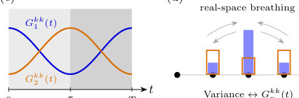
<figcaption class="paper-figure-caption"><b>Fig 1.</b> FIG. 1. The Floquet-projector quantum metric associated with a single or multiple Floquet bands (a) enables a refined characterization of Floquet-Bloch states in periodically driven lattice systems. In particular, the intraperiod evolution of the integrated quantum metric associated with the chiral sub- space constrains the set of allowed Floquet topological invari- ants ν0 and νπ at symmetry-selected times 0 and τ (b). The band-resolved integrated quantum metric captures the oscil- latory real-space spread of the associated Wannier state (c), which becomes the dominant real-space motion for localized eigenstates of a Floquet flat band (d).</figcaption>
</figure>
<figure class="paper-figure-card">
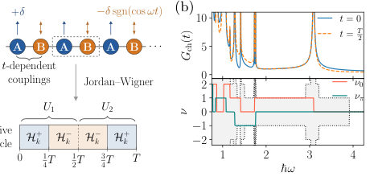
<figcaption class="paper-figure-caption"><b>Fig 2.</b> FIG. 2. (a) Sketch of driven spin chain (7) and its Floquet cycle. The chain has a two-site unit cell with a longitudinal static field on site A (blue) and a square-wave-modulated field on site B (orange). The drive decomposes into half-period evolutions U1 and U2. (b) Upper panel shows Gch(0) (solid) and Gch(T/2) (dashed) versus driving frequency ω for the respective two symmetric time frames U2U1 and U1U2. Lower panel shows the corresponding gap-resolved windings ν0, νπ. The shaded region is the range allowed by Eq. (6).</figcaption>
</figure>
<figure class="paper-figure-card">
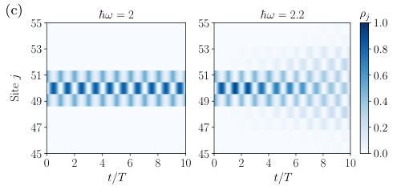
<figcaption class="paper-figure-caption"><b>Fig 3.</b> FIG. 3. (a) Flat and nearly-flat quasienergy spectrum. (b) For a flat band, Gkk n (t) (lines) coincides with the real-space variance Var[xn](t) (dots). The dashed gray line is Gch(t). (c) Site-resolved density plot shows the corresponding real-space breathing of the localized flat-band state at and off the flat- band frequency.</figcaption>
</figure>
</div>

<p><strong>Summary.</strong> The paper introduces the Floquet-projector quantum metric to create a unified geometric framework for analyzing periodically driven quantum systems. This metric successfully links global topological properties, calculated over the Brillouin zone, to local, measurable quantities like the real-space breathing variance of localized quantum states. It offers a systematic tool for understanding dynamics in time-periodic lattices.</p>
<p><strong>Why it may be interesting.</strong> This work provides a powerful mathematical bridge between abstract topological invariants derived from momentum space (Bloch theory) and concrete, time-dependent physical measurements of particle localization in driven quantum matter.</p>
<details>
<summary>Detailed structure</summary>
<p><strong>Main problem.</strong> The goal is to develop a unified quantum geometric theory characterizing Floquet-Bloch states, simultaneously addressing both stroboscopic time measurements and continuous micromotion dynamics in periodically driven systems.</p>
<p><strong>Main result.</strong> The authors introduce the Floquet-projector quantum metric, which serves as a diagnostic tool linking momentum-space topological invariants (like winding numbers) to measurable real-space observables such as the variance of localized states.</p>
<p><strong>Method.</strong> The framework utilizes time-evolved Floquet projectors and defines a generalized quantum geometric tensor that decomposes into a metric and Berry curvature, allowing for systematic analysis across different time scales.</p>
<p><strong>Model / system.</strong> The theory is applied to periodically driven spatially periodic quantum systems, exemplified by chiral-symmetric integrable spin chains or general lattice models described by time-periodic Hamiltonians.</p>
<p><strong>Key observables.</strong> Floquet-projector quantum metric ($g_{\alphaeta}^n$), momentum-integrated metric ($\mathcal{G}_{ab}^n$), and the real-space variance of localized states ($   ext{Var}<a href="t">x_n</a>$).</p>
<p><strong>Important parameters / regimes.</strong> Driving period ($T$), Brillouin zone integration, symmetry-selected times ($t_0$).</p>
<p><strong>Assumptions / limitations.</strong> The analysis often focuses on non-degenerate Floquet bands for simplicity, though the method is designed to be generalizable.</p>
<p><strong>Figures summary.</strong> Figures illustrate the quantum metric characterizing Bloch states, constraints imposed by topological invariants at symmetry points, and direct comparisons showing how the calculated metric matches the measured real-space breathing of localized eigenstates.</p>
<p><strong>Paper structure.</strong> The paper builds from defining the time-evolving Floquet projector to constructing the quantum geometric tensor. It then applies this formalism to derive measurable quantities like the integrated metric, establishing bounds related to topology and demonstrating its equivalence to real-space variance for flat bands.</p>
</details>
<details>
<summary>Abstract</summary>
<p>Periodic driving of spatially periodic quantum systems generates band structures that are absent in static crystals. We present a quantum geometric theory to characterize the Floquet-Bloch states at stroboscopic times and during micromotion on equal footing. Our framework builds upon time-evolved Floquet projectors that connect static quantum geometry, micromotion-operator geometry, and Floquet topology. To illustrate the formalism, we introduce the Floquet-projector quantum metric, which we employ to characterize the real-space breathing of localized states in a driven chiral-symmetric integrable spin chain. The Floquet-projector quantum metric, integrated over the Brillouin zone, captures the oscillatory variance during micromotion and, at symmetry-selected times, is bounded below by Floquet topological invariants. We further describe how the Floquet projector geometry enables a systematic investigation of micromotion dynamics in periodically driven lattice systems.</p>
</details>
<p><sub><a href="#top">↑ back to top</a></sub></p>

<p><a id="paper-2608.14460"></a></p>
<h3 id="learning-spin-hamiltonians-from-terahertz-two-dimensional-coherent-spectroscopy"><a href="http://arxiv.org/abs/2608.14460v1">Learning Spin Hamiltonians from Terahertz Two-Dimensional Coherent Spectroscopy</a></h3>
<p><strong>Authors:</strong> Martin Mootz, Chuankun Huang, Liang Luo, Jigang Wang, Yong-Xin Yao<br>
<strong>Type:</strong> both · <strong>Category:</strong> strongly correlated electrons · <strong>PDF:</strong> <a href="https://arxiv.org/pdf/2608.14460v1">https://arxiv.org/pdf/2608.14460v1</a><br>
<strong>Analysis basis:</strong> full PDF text, analyzed in chunks
<strong>Topic relevance:</strong> <code>methods for driven-dissipative</code> <strong>3/5</strong> · <code>driven-dissipative phase transition</code> <strong>2/5</strong> · <code>quantum optics experiment</code> <strong>2/5</strong> · <code>Keldysh / 2PI / non-Gaussian methods</code> <strong>1/5</strong> · <code>analog quantum simulation</code> <strong>1/5</strong> · <code>correlated / nonlocal dissipation</code> <strong>1/5</strong> · <code>interference shaping light</code> <strong>1/5</strong> · <code>quantum measurements</code> <strong>1/5</strong></p>
<div class="figure-strip-hint">↔ Scroll figures horizontally</div>
<div class="paper-figures-scroll">
<figure class="paper-figure-card">
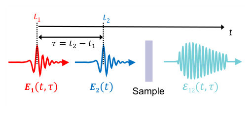
<figcaption class="paper-figure-caption"><b>Fig 1.</b> FIG. 1. Schematic of THz two-dimensional coherent spec- troscopy in transmission geometry. The sample is excited by two collinear, phase-locked few-cycle incident THz electric- field pulses. The first pulse, E1 (red), is centered at t1 = −τ, while the second pulse, E2 (blue), is centered at t2 = 0, defining the inter-pulse delay τ = t2 −t1. With this con- vention, positive τ corresponds to pulse 1 arriving before pulse 2. The field E12(t, τ) (cyan) denotes the transmit- ted electric field measured after excitation with both pulses present. The nonlinear THz response is obtained by subtract- ing the corresponding single-pulse transmitted reference fields, ENL(t, τ) = E12(t, τ) −E1(t, τ)...</figcaption>
</figure>
<figure class="paper-figure-card">
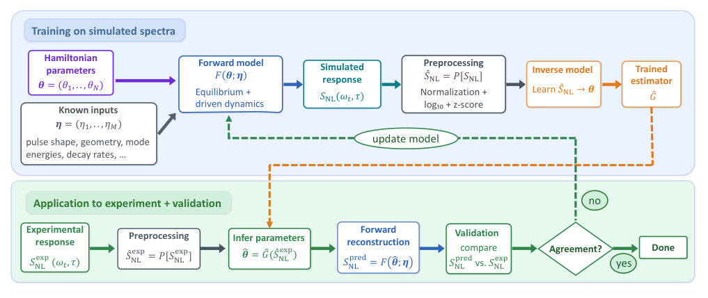
<figcaption class="paper-figure-caption"><b>Fig 2.</b> FIG. 2. Workflow for machine-learning-based Hamiltonian inference from THz-2DCS. The upper box shows the training stage based on simulated nonlinear spectra. Hamiltonian parameters θ = (θ1, . . . , θN) are combined with known experimental and modeling inputs η = (η1, . . . , ηM), such as the pulse shapes, excitation geometry, decay rates, collective-mode energies, and analysis time window. These inputs define the forward model F(θ; η), which includes construction of the equilibrium state, propagation of the driven dynamics, and extraction of the nonlinear THz-2DCS response SNL(ωt, τ). The delay argument τ may denote either a single selected inter-pulse delay or a finite set of delays T =...</figcaption>
</figure>
<figure class="paper-figure-card">
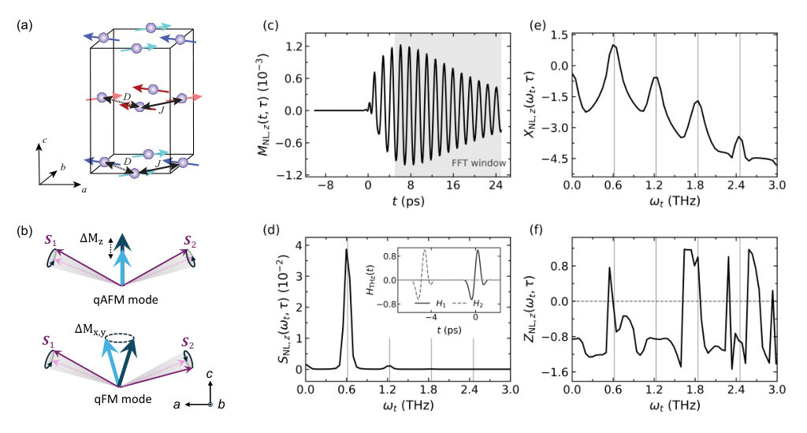
<figcaption class="paper-figure-caption"><b>Fig 3.</b> FIG. 3. Spin-dynamics forward model and spectral preprocessing for machine learning. (a) Schematic magnetic unit cell of the rare-earth orthoferrite structure motivating the model. The magnetic unit cell contains four Fe sublattices, with the colored arrows indicating the local Fe spin moments. The dominant nearest-neighbor exchange interaction J and the Dzyaloshinskii–Moriya interaction D between neighboring Fe spin moments are indicated schematically. Exchange stabilizes the nearly antiferromagnetic arrangement, while the DM interaction, taken along the crystallographic b axis, induces weak canting and produces a small net magnetization along the c axis. The simulations reduce the...</figcaption>
</figure>
<figure class="paper-figure-card">
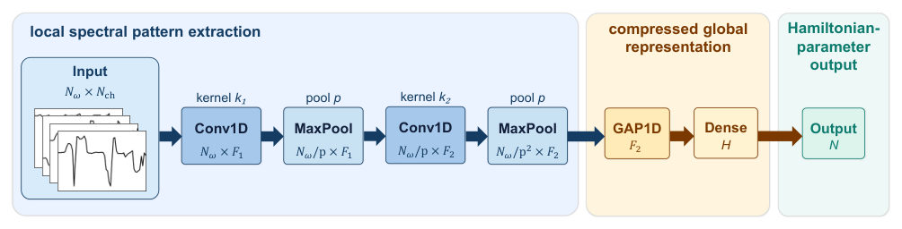
<figcaption class="paper-figure-caption"><b>Fig 4.</b> FIG. 4. One-dimensional CNN architecture for Hamiltonian inference. The input is a standardized nonlinear spectrum represented as an array of size Nω × Nch, where Nω is the number of retained frequency points and Nch is the number of spectral channels. For single-delay, single-component inputs, Nch = 1; for multi-delay or multi-component inputs, the corresponding standardized spectra are stacked along the channel dimension. Two Conv1D–MaxPool blocks extract local spectral patterns along the frequency axis. The kernel sizes k1 and k2 specify the number of neighboring spectral points used by each learned filter, with the second convolution using dilation to enlarge the effective receptive...</figcaption>
</figure>
<figure class="paper-figure-card">
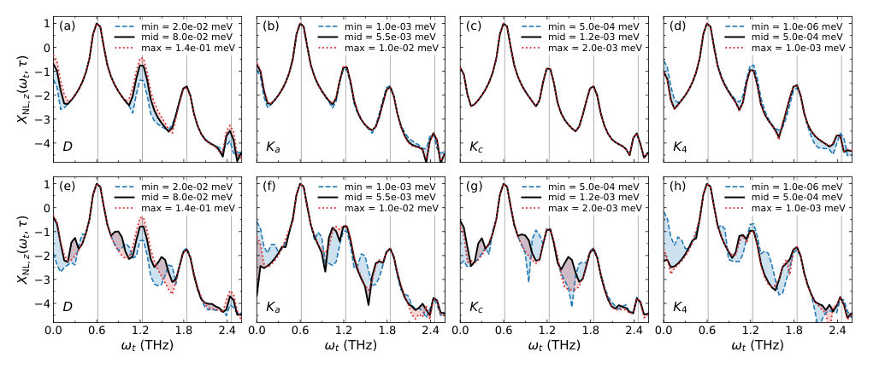
<figcaption class="paper-figure-caption"><b>Fig 5.</b> FIG. 5. Parameter sensitivity of synthetic nonlinear spectra. One-at-a-time parameter sweeps for two pulse configurations. In all panels, the plotted signal is the z-component nonlinear magnetization spectrum. The plotted quantity is the log- compressed normalized nonlinear spectrum XNL,z(ωt, τ) defined in Eq. (25), evaluated at τ = 4.8 ps for equal pulse amplitudes H(0) 1 = H(0) 2 = 1 T. Panels (a)–(d) correspond to z-polarized excitation, ˆe1 = ˆe2 = ˆz, while panels (e)–(h) show equal y–z-polarized excitation, ˆe1 = ˆe2 = (ˆy + ˆz)/ √</figcaption>
</figure>
</div>

<p><strong>Summary.</strong> The paper presents a novel machine learning framework to solve the inverse problem of determining effective spin Hamiltonian parameters from nonlinear terahertz two-dimensional coherent spectroscopy ($  ext{THz-2DCS}$). By training a neural network on simulated data, it maps complex spectral fingerprints directly to physical coupling constants. This establishes $  ext{THz-2DCS}$ as a powerful tool for experimentally guiding the understanding and refinement of quantum material models.</p>
<p><strong>Why it may be interesting.</strong> This work bridges advanced quantum optics/spectroscopy techniques (THz-2DCS) with modern AI methods to tackle fundamental problems in condensed matter physics—the direct, non-perturbative determination of microscopic interactions.</p>
<details>
<summary>Detailed structure</summary>
<p><strong>Main problem.</strong> The core challenge is solving an inverse problem: determining the microscopic parameters of a quantum Hamiltonian directly from complex, nonlinear experimental spectroscopic measurements.</p>
<p><strong>Main result.</strong> The proposed machine-learning framework successfully infers physically reasonable Hamiltonian parameters by mapping high-dimensional THz-2DCS spectral fingerprints back to model inputs for rare-earth orthoferrites.</p>
<p><strong>Method.</strong> A supervised ML approach is used where a neural network learns the inverse map from preprocessed nonlinear terahertz spectra (the fingerprint) to the underlying physical coupling constants of the Hamiltonian.</p>
<p><strong>Model / system.</strong> The study models spin dynamics in rare-earth orthoferrites using an effective two-sublattice Landau–Lifshitz–Gilbert (LLG) spin model. This model incorporates key interactions like exchange, Dzyalinskii–Moriya (DM), and various anisotropies.</p>
<p><strong>Key observables.</strong> The nonlinear terahertz response $ ext{ENL}(t,     au)$ measured via Two-Dimensional Coherent Spectroscopy ($  ext{THz-2DCS}$), which acts as a high-dimensional spectral fingerprint.</p>
<p><strong>Important parameters / regimes.</strong> Hamiltonian parameters including exchange coupling, DM interaction strength, anisotropy coefficients, and damping rates.</p>
<p><strong>Assumptions / limitations.</strong> The primary assumption is that the nonlinear spectrum contains enough information to uniquely constrain the Hamiltonian parameters; discrepancies reveal limitations of the reduced model used.</p>
<p><strong>Figures summary.</strong> Figure 1 illustrates the $ ext{THz-2DCS}$ setup using two phase-locked pulses and defines the measured nonlinear response. Figure 2 (implied) details the full workflow: training the ML inverse map using simulated data, and applying it to experimental measurements for parameter inference.</p>
<p><strong>Paper structure.</strong> The paper establishes the problem of Hamiltonian inversion, introduces the $   ext{THz-2DCS}$ measurement as a rich observable, develops a supervised machine learning pipeline (forward model $   o$ preprocessing $  o$ inverse NN), validates this approach using synthetic benchmarks, and finally applies it to real experimental data from $ ext{Sm}<em 0.6>{0.4}   ext{Er}</em>_3$.}   ext{FeO</p>
</details>
<details>
<summary>Abstract</summary>
<p>Effective Hamiltonians connect microscopic interactions to measurable collective behavior in quantum materials, but determining their parameters directly from experiment remains a challenging inverse problem. We introduce a supervised machine-learning framework that infers Hamiltonian parameters from nonlinear terahertz two-dimensional coherent spectra. A calibrated forward model generates spectra from candidate Hamiltonians, a common preprocessing pipeline maps simulated and experimental spectra into the same representation, and a neural network learns the inverse map from spectral fingerprints to microscopic parameters. We demonstrate the approach for rare-earth orthoferrites using a two-sublattice Landau--Lifshitz--Gilbert spin model with exchange, Dzyaloshinskii--Moriya interaction, anisotropies, and damping. Synthetic benchmarks show that nonlinear spectra encode parameters beyond those fixed by the linear response, with inference accuracy tracking the physical spectral sensitivity and robustness against noise improved by using multiple inter-pulse delays. Applied to experimental THz-2DCS data from Sm$_{0.4}$Er$_{0.6}$FeO$_3$, the inferred parameters yield physically reasonable forward simulations, while remaining discrepancies identify limitations of the reduced model. These results establish THz-2DCS as a data-rich platform for effective-Hamiltonian inference and model refinement, enabling experimentally driven identification of microscopic interactions while providing a foundation for understanding, predicting, and ultimately controlling the emergent properties of quantum materials.</p>
</details>
<p><sub><a href="#top">↑ back to top</a></sub></p>

<p><a id="paper-2608.13912"></a></p>
<h3 id="thermal-effect-on-the-anomaly-induced-electromechanical-response-in-gapped-graphene"><a href="http://arxiv.org/abs/2608.13912v1">Thermal effect on the anomaly-induced electromechanical response in gapped graphene</a></h3>
<p><strong>Authors:</strong> A. Sedrakyan, K. Ziegler<br>
<strong>Type:</strong> theory · <strong>Category:</strong> other · <strong>PDF:</strong> <a href="https://arxiv.org/pdf/2608.13912v1">https://arxiv.org/pdf/2608.13912v1</a><br>
<strong>Analysis basis:</strong> full PDF text, analyzed in chunks
<strong>Topic relevance:</strong> <code>Keldysh / 2PI / non-Gaussian methods</code> <strong>3/5</strong> · <code>driven-dissipative phase transition</code> <strong>2/5</strong> · <code>methods for driven-dissipative</code> <strong>2/5</strong> · <code>non-equilibrium universality</code> <strong>2/5</strong> · <code>analog quantum simulation</code> <strong>1/5</strong> · <code>correlated / nonlocal dissipation</code> <strong>1/5</strong> · <code>quantum measurements</code> <strong>1/5</strong></p>
<div class="figure-strip-hint">↔ Scroll figures horizontally</div>
<div class="paper-figures-scroll">
<figure class="paper-figure-card">

<figcaption class="paper-figure-caption"><b>Fig 1.</b> FIG. 1. Dimensionless one-cone coefficient CT (m, µ, T) as a function of gate position. Dashed vertical lines mark |µ| = |m|. The T = 0 curve is the plateau-to-m/|µ| result. Finite temperature rounds the band-edge nonanalyticity.</figcaption>
</figure>
<figure class="paper-figure-card">
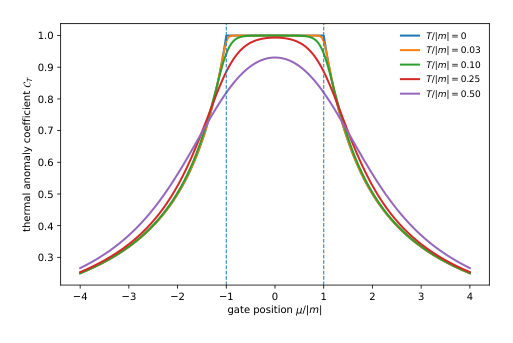
<figcaption class="paper-figure-caption"><b>Fig 2.</b> Figure 2 gives the same information as a gate- temperature map. This plot is useful for fitting data. A temperature sweep at fixed gate and a gate sweep at fixed temperature probe the same universal function, up</figcaption>
</figure>
<figure class="paper-figure-card">
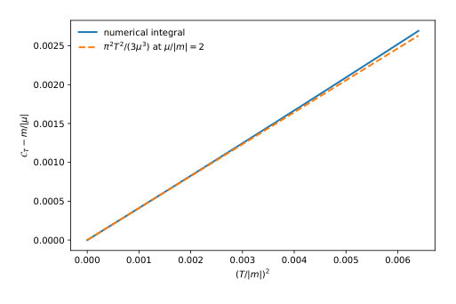
<figcaption class="paper-figure-caption"><b>Fig 3.</b> FIG. 4. Doped-regime Sommerfeld correction at µ/|m| = 2. The difference CT −m/|µ| is quadratic in T at low temperature and approaches Eq. (16).</figcaption>
</figure>
<figure class="paper-figure-card">
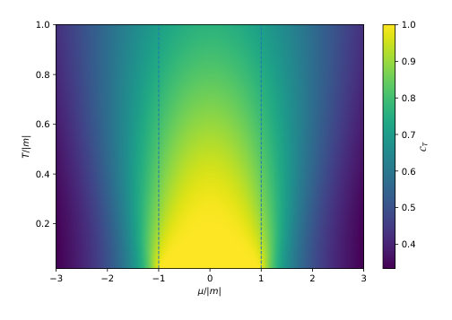
<figcaption class="paper-figure-caption"><b>Fig 4.</b> FIG. 2. Gate-temperature map of CT for m &gt; 0. The crossover width near |µ| = |m| is set by T. The high-doping tail keeps the Berry-curvature scaling.</figcaption>
</figure>
<figure class="paper-figure-card">
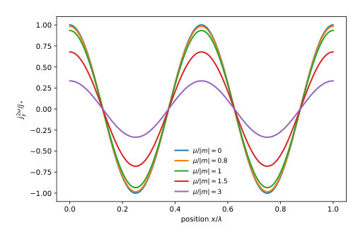
<figcaption class="paper-figure-caption"><b>Fig 5.</b> FIG. 5. Normalized transverse current j2ω y /j∗for a flexural wave at T/|m| = 0.12, where j∗= (egph/4π)ωq3h2 0/2 for one cone. The charge-adding graphene response multiplies the plotted coefficient by four. Gate voltage changes the ampli- tude through CT but does not change the second-harmonic spatial phase.</figcaption>
</figure>
</div>

<p><strong>Summary.</strong> This theoretical work analyzes the electromechanical response in gapped graphene driven by mechanical strain, which generates an anomaly-induced current via a mixed Chern-Simons term. The key finding is that finite temperature smooths out sharp zero-temperature features into universal crossovers. This provides experimental protocols to isolate and measure this topological electronic response.</p>
<p><strong>Why it may be interesting.</strong> The concept of emergent gauge fields coupled to electronic properties, leading to quantized or near-quantized responses dependent on temperature crossovers, is highly relevant for understanding topological phenomena in solid-state devices.</p>
<details>
<summary>Detailed structure</summary>
<p><strong>Main problem.</strong> The study investigates how finite temperature affects the anomaly-induced electromechanical response in gapped graphene when subjected to mechanical strain.</p>
<p><strong>Main result.</strong> Finite temperature replaces the sharp, nonanalytic zero-temperature cusp at the band edge with a universal smooth crossover controlled by ratios of T, gap, and chemical potential. This allows for diagnostic separation of the anomalous current from background effects using different excitation protocols.</p>
<p><strong>Method.</strong> The authors use theoretical derivations based on the mixed Chern-Simons response derived from coupling mechanical deformation (emergent gauge field) to the electromagnetic field in a massive Dirac fermion model.</p>
<p><strong>Model / system.</strong> The system is gapped graphene, modeled by a massive Dirac cone Hamiltonian. The physics relies on the parity anomaly leading to a mixed electromechanical Chern-Simons term in the effective action.</p>
<p><strong>Key observables.</strong> Anomalous transverse electrical current ($\propto \omega q^3 h_0^2$ for second harmonic; linear in $\delta h$ for fundamental mixing), and the finite-temperature coefficient $\mathcal{C}_T(m, \mu)$.</p>
<p><strong>Important parameters / regimes.</strong> Temperature ($T$), gap ($m$), chemical potential ($\mu$), and wave vector/frequency components of the mechanical drive.</p>
<p><strong>Assumptions / limitations.</strong> The analysis is performed in the low-frequency lock-in limit (adiabatic regime) and assumes no dissipative absorption from particle-hole continua.</p>
<p><strong>Figures summary.</strong> Figures illustrate the universal thermal rounding of the anomaly coefficient $C_T$ near the band edge, showing characteristic functional forms for insulating and doped regimes.</p>
<p><strong>Paper structure.</strong> The paper develops the theory by first establishing the mixed Chern-Simons response. It then analyzes two experimental protocols—second-harmonic generation from flexural waves and fundamental-frequency signals from mixed phonon drives—to show that both are governed by the same universal thermal coefficient $C_T$.</p>
</details>
<details>
<summary>Abstract</summary>
<p>Mechanical deformation of gapped graphene can act on Dirac quasiparticles as an emergent gauge field. When this deformation field couples to the same current as the electromagnetic field, the parity anomaly produces a mixed electromechanical Chern-Simons response: a phonon electric field drives a transverse electrical current, and a phonon magnetic field binds charge. Previous zero-temperature results predict a sharp change in the response when the chemical potential crosses the band edge. We show that finite temperature replaces this sharp feature by a universal smooth crossover controlled only by the ratios of temperature, gap, and chemical potential. The response remains almost quantized in the insulating regime, is rounded over a gate window of order temperature near the band edge, and approaches the doped Berry-curvature result with a controlled Sommerfeld correction. We apply the result to two experimentally useful drives: a traveling flexural wave, which produces a transverse second-harmonic current, and a dynamic phonon mixed with a static ripple, which produces a fundamental-frequency signal. The same gate-temperature line shape controls both signals. This gives a direct way to separate the anomaly-induced current from ordinary electromechanical backgrounds and to extract the effective gap and electronic temperature in graphene devices.</p>
</details>
<p><sub><a href="#top">↑ back to top</a></sub></p>

<p><a id="paper-2608.14447"></a></p>
<h3 id="angular-displacement-readout-of-a-mechanical-oscillator-with-a-guided-mode-resonance"><a href="http://arxiv.org/abs/2608.14447v1">Angular displacement readout of a mechanical oscillator with a guided mode resonance</a></h3>
<p><strong>Authors:</strong> Diego Torres-Barajas, Oscar Angulo, Aman R. Agrawal, Mohamed ElKabbash, Dalziel J. Wilson<br>
<strong>Type:</strong> experiment · <strong>Category:</strong> other · <strong>PDF:</strong> <a href="https://arxiv.org/pdf/2608.14447v1">https://arxiv.org/pdf/2608.14447v1</a><br>
<strong>Analysis basis:</strong> full PDF text, analyzed in chunks
<strong>Topic relevance:</strong> <code>quantum measurements</code> <strong>3/5</strong> · <code>quantum optics experiment</code> <strong>3/5</strong> · <code>interference shaping light</code> <strong>2/5</strong> · <code>QC/QI experiment</code> <strong>1/5</strong> · <code>driven-dissipative phase transition</code> <strong>1/5</strong> · <code>methods for driven-dissipative</code> <strong>1/5</strong></p>
<div class="figure-strip-hint">↔ Scroll figures horizontally</div>
<div class="paper-figures-scroll">
<figure class="paper-figure-card">
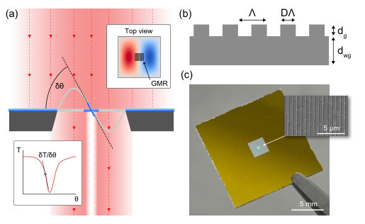
<figcaption class="paper-figure-caption"><b>Fig 1.</b> Figure 1. Optomechanical coupling of a Si3N4 membrane to a guided mode resonance (GMR). (a) Membrane displacement modifies the local angle of incidence θ of a laser beam incident on an embedded grating slab structure, altering the transmittivity T of a GMR. Inset: Orientation of the grating relative to the mechanical mode. (b) Grat- ing geometry: period Λ, duty cycle D, grating thickness dg, waveg- uide thickness dwg. (c) Photo of 2.5 mm Si3N4 membrane with em- bedded grating. Inset: scanning electron micrograph of the grating.</figcaption>
</figure>
<figure class="paper-figure-card">
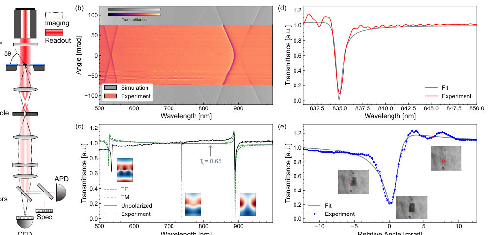
<figcaption class="paper-figure-caption"><b>Fig 2.</b> Figure 2. Optical characterization of guided mode resonance (GMR) device. (a) Experimental setup for measuring wavelength λ and incidence- angle θ dependent membrane transmittance T(λ,θ) using broadband (supercontinuum) and wavelength-tunable narrowband (external cavity diode) laser light. A half-wave plate (HWP) controls the laser polarization. Lens L1 forms a 4f system for spatial filtering with a pinhole. Lenses L2-L4 reimage the laser onto a CCD camera, spectrometer (Spec), or avalanche photodiode (APD). (b) Broadband measurement of T(λ,θ) using the spectrometer, revealing several GMRs and avoided crossings. (c) Simulated and measured T(λ,θ) at normal incidence, θ = 0, for different...</figcaption>
</figure>
<figure class="paper-figure-card">
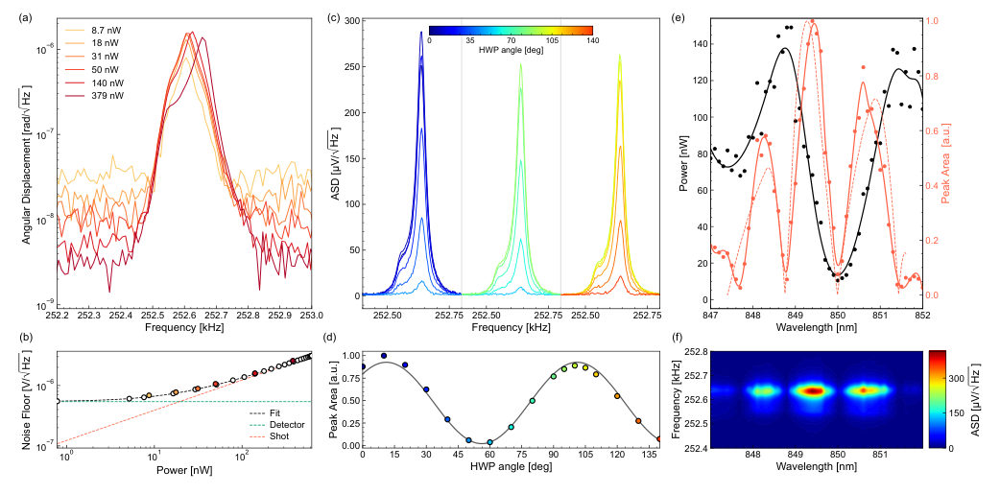
<figcaption class="paper-figure-caption"><b>Fig 3.</b> Figure 3. Angular displacement measurements and validation of optomechanical coupling. (a) Driven angular displacement spectra for various detected powers P. The two peaks corresponding to degenerate mechanical modes of the square membrane. (b) Noise floor in raw voltage units versus P, showing shot-noise scaling for P &gt;∼100 nW. (c) Driven angular displacement spectra for different linear polarizaion orientations of the incident field, varied with a rotatable half waveplate (HWP). (d) RMS displacement versus HWP angle. (e) Detector optical power (black) and RMS displacement versus probe laser wavelength. (f) Spectrograph of displacement spectra (panel a) versus probe laser wavelength.</figcaption>
</figure>
<figure class="paper-figure-card">
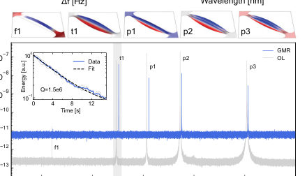
<figcaption class="paper-figure-caption"><b>Fig 4.</b> Figure 4. GMR readout of a nanomechanical torsion oscillator. (a) Microscope image of the device: a 100-nm-thick, 0.4-mm-wide, 7- mm-long Si3N4 nanoribbon [30] with embedded grating similar to that in Fig. 1. (b) Thermal-noise-limited readout of the fundamental torsion mode via GMR transmission and optical lever (OL) methods with varying detected power P. (c) Detected power and raw signal variance (area under thermal noise peak) versus wavelength, used to optimize the signal-to-noise ratio in (b). (d) Simulated nanoribbon mechanicaal modeshapes. (e) Broadband measurements for the data in (b). Inset: Ringdown measurement of torsion mode.</figcaption>
</figure>
</div>

<p><strong>Summary.</strong> The paper presents a novel method for ultra-sensitive angular displacement measurement by integrating a Guided Mode Resonance (GMR) structure onto $   ext{Si}_3   ext{N}_4$ membranes. By exploiting the sharp spectral features of the GMR, they achieve shot-noise-limited sensitivity in the nrad/$\sqrt{	ext{Hz}}$ range using minimal optical power. This establishes GMR as a powerful, on-chip platform for quantum optomechanical sensing.</p>
<p><strong>Why it may be interesting.</strong> This work directly addresses quantum sensing limitations in optomechanics. The use of GMR provides an integrated, chip-scale enhancement mechanism that surpasses standard free-space readout methods, making it highly relevant to developing next-generation quantum transducers and sensors.</p>
<details>
<summary>Detailed structure</summary>
<p><strong>Main problem.</strong> The challenge is achieving high-sensitivity, coherent readout of angular displacement from a mechanical oscillator, which is complicated by the multimode nature of optomechanical coupling.</p>
<p><strong>Main result.</strong> The authors successfully demonstrated that using an integrated Guided Mode Resonance (GMR) structure enables shot-noise-limited angular displacement imprecision down to $ ext{nrad}/\sqrt{    ext{Hz}}$ using nanowatts of optical power.</p>
<p><strong>Method.</strong> They fabricated subwavelength gratings into $   ext{Si}_3   ext{N}_4$ membranes and measured the change in transmitted light intensity (transmittance $T$) as the membrane undergoes angular displacement ($    heta$).</p>
<p><strong>Model / system.</strong> The system involves coupling a mechanical oscillator (like a torsion mode) to an optical cavity enhanced by a GMR structure etched into $   ext{Si}_3   ext{N}_4$. The readout relies on how mechanical strain modifies the local angle of incidence, thereby altering the Fano-shaped GMR transmission spectrum.</p>
<p><strong>Key observables.</strong> Angular displacement imprecision ($    ext{S}_ heta$), transmitted power ($T$), and spectral features like the GMR linewidth ($\kappa$).</p>
<p><strong>Important parameters / regimes.</strong> Shot-noise limit, $ ext{nrad}/\sqrt{    ext{Hz}}$ sensitivity, $Q \approx 10^6$ for thermal motion resolution, and low optical power (nanowatts).</p>
<p><strong>Assumptions / limitations.</strong> The measurement assumes the signal is dominated by GMR-mediated transduction, confirmed via polarization and wavelength detuning control experiments.</p>
<p><strong>Figures summary.</strong> Figures illustrate the optomechanical coupling mechanism using grating structures; Figure 2 shows broadband/narrowband characterization of Fano resonances; Figure 3 presents angular displacement spectra showing shot-noise scaling and dependence on input parameters.</p>
<p><strong>Paper structure.</strong> The paper first introduces the challenge of multimode readout, details the GMR structure as a solution, presents experimental measurements confirming high sensitivity (shot-noise limited), and concludes by establishing GMR as a robust on-chip sensor platform for angular displacement.</p>
</details>
<details>
<summary>Abstract</summary>
<p>Measuring the angular displacement of a mechanical oscillator is a ubiquitous task; however, the multimode nature of angular optomechanical coupling makes coherent signal enhancement challenging. Here we demonstrate coherently enhanced angular displacement readout with an integrated guided mode resonance (GMR) structure, applying it to precision readout of a nanomechanical oscillator. Specifically, we fabricate subwavelength gratings into 100-nm-thick Si$_3$N$_4$ membranes and record their vibration by direct transmission measurements. The narrow linewidth $\approx 2.5\;\text{mrad}$ of the GMR enables a shot-noise-limited displacement imprecision of $ 10^{-9}\;\text{rad}/\sqrt{\text{Hz}}$ with nanowatts of optical power, sufficient to resolve the thermal motion of a $Q\approx 10^6$ torsion mode with a signal-to-noise ratio of 47 dB. Control experiments based on polarization and wavelength detuning confirm that the measured signal arises from GMR-mediated transduction. These results establish guided-mode resonance as an on-chip approach to angular displacement readout in quantum optomechanical sensors.</p>
</details>
<p><sub><a href="#top">↑ back to top</a></sub></p>

<p><a id="paper-2608.13764"></a></p>
<h3 id="certified-coherent-informative-and-non-entanglement-breaking-fixed-points-of-future-referential-quantum-feedback"><a href="http://arxiv.org/abs/2608.13764v1">Certified coherent, informative, and non-entanglement-breaking fixed points of future-referential quantum feedback</a></h3>
<p><strong>Authors:</strong> Eran Kopel<br>
<strong>Type:</strong> theory · <strong>Category:</strong> quantum information and computing · <strong>PDF:</strong> <a href="https://arxiv.org/pdf/2608.13764v1">https://arxiv.org/pdf/2608.13764v1</a><br>
<strong>Analysis basis:</strong> full PDF text, analyzed in chunks
<strong>Topic relevance:</strong> <code>quantum measurements</code> <strong>3/5</strong> · <code>Keldysh / 2PI / non-Gaussian methods</code> <strong>2/5</strong> · <code>driven-dissipative phase transition</code> <strong>2/5</strong> · <code>correlated / nonlocal dissipation</code> <strong>1/5</strong> · <code>methods for driven-dissipative</code> <strong>1/5</strong> · <code>non-equilibrium universality</code> <strong>1/5</strong></p>
<div class="figure-strip-hint">↔ Scroll figures horizontally</div>
<div class="paper-figures-scroll">
<figure class="paper-figure-card">
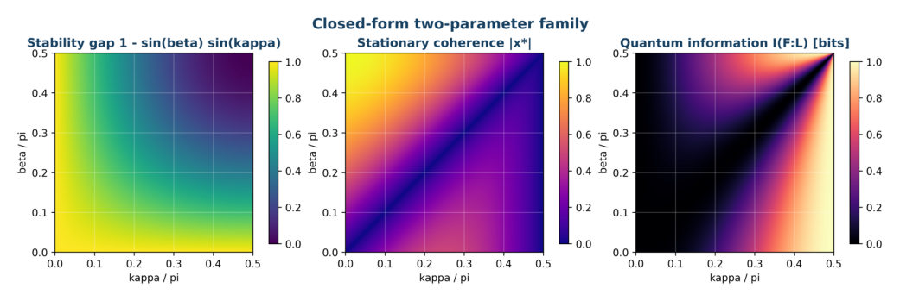
<figcaption class="paper-figure-caption"><b>Fig 1.</b> FIG. 1. Exact two-parameter family of Sec. V (θ = 0, ϕ = π/2). Left: stability gap 1−sin β sin κ. Center: stationary coherence |x∗| from Eq. (12), vanishing on the diagonal β = κ. Right: quantum mutual information I(F :L) of the pre-feedback probe– event state at the stationary message; for this full-swap family the orthogonal future records give I(F : L) = S(ρL) = S(ρ∗ M), an equality that uses the orthogonality of the future records and the resulting purity of the conditional probe states at θ = 0, and that is special to this full-swap slice. It too vanishes on β = κ, where ∥v∗∥2 = 1 and the stationary message is pure.</figcaption>
</figure>
<figure class="paper-figure-card">
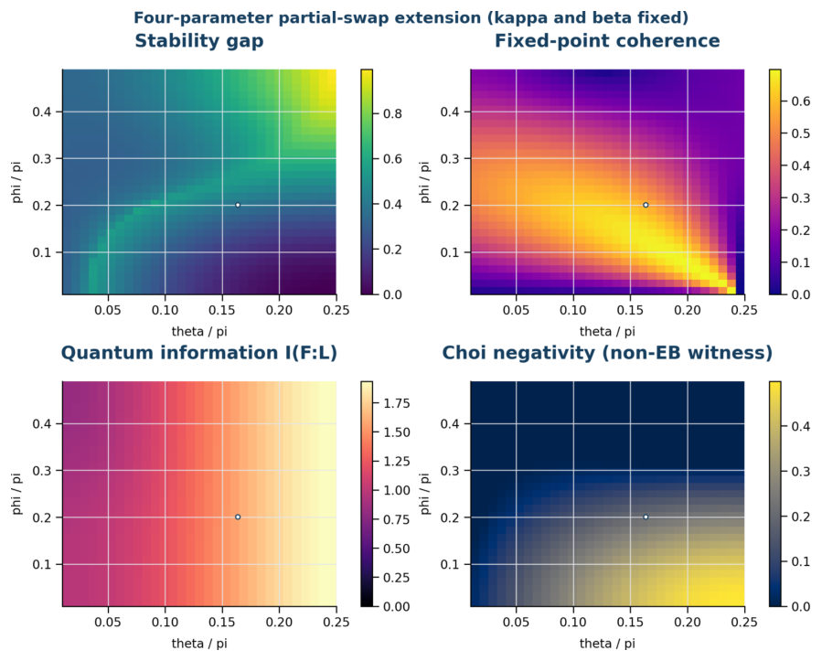
<figcaption class="paper-figure-caption"><b>Fig 2.</b> FIG. 2. Numerical maps of the partial-swap family on the (θ, ϕ) slice with κ = κ0, β = β0: stability gap (spectral-radius convention, Sec. II B), fixed-point coherence, pre-feedback information I(F :L), and Choi negativity. A positive-negativity region (non-entanglement-breaking witness) overlaps with stability, coherence, and information; the white marker is the reference point (13).</figcaption>
</figure>
<figure class="paper-figure-card">
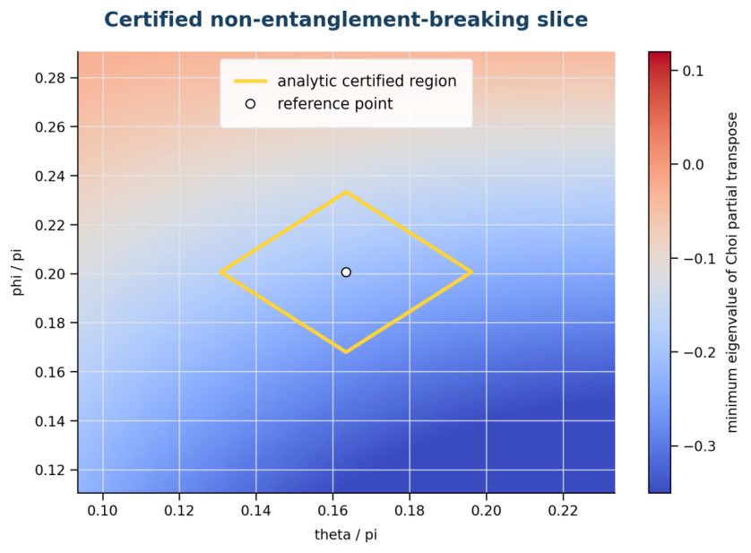
<figcaption class="paper-figure-caption"><b>Fig 3.</b> FIG. 3. Certified Choi-NPT region in the (θ, ϕ) slice. The background is the directly evaluated minimum eigenvalue λmin[H(θ, ϕ)] on a diverging color scale, changing sign where the color passes from blue (NPT) through white to red (PPT). The yellow diamond is the analytic certificate 4s &lt; µ−of Proposition 3; it lies strictly inside the true NPT region, as it must.</figcaption>
</figure>
<figure class="paper-figure-card">
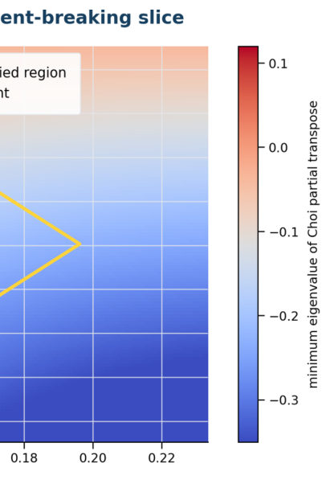
<figcaption class="paper-figure-caption"><b>Fig 4.</b> Figure 4 shows the four analytic thresholds (22) con- verted to symmetric half-widths, together with the cho- sen square (23). Direct (nonrigorous) evaluation of the channel on and beyond the certified square indicates that all four properties in fact persist over a much larger region—e.g., at the corners of the square of half-width 0.0034π the directly computed values are 1 −∥A∥2 ≥ 0.278, Cℓ1 ≥0.554, I ≥1.548 bits, and −λmin ≥0.195— so the certified square reflects the conservatism of the generic perturbation bounds, not a physical boundary.</figcaption>
</figure>
<figure class="paper-figure-card">
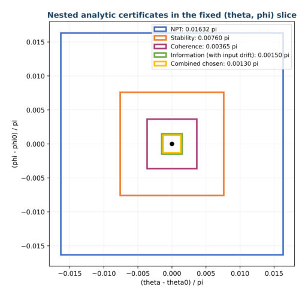
<figcaption class="paper-figure-caption"><b>Fig 5.</b> FIG. 4. Nested analytic certificates in the fixed (θ, ϕ) slice, as symmetric half-widths about the reference point: NPT (0.01632π), stability (0.00760π), coherence (0.00365π), infor- mation with input drift (0.00150π), and the chosen combined square (0.0013π) of Proposition 4.</figcaption>
</figure>
</div>

<p><strong>Summary.</strong> This paper rigorously analyzes 'future-referential' quantum feedback mechanisms by classifying the fixed points of associated quantum channels. Using advanced interval arithmetic, it proves the existence of a parameter regime where the channel is simultaneously stable, coherent, informative, and non-entanglement-breaking. This advances the theoretical understanding of information processing in time-delayed or retrocausal quantum systems.</p>
<p><strong>Why it may be interesting.</strong> This work provides highly technical, mathematically rigorous tools for analyzing complex quantum feedback loops that touch upon causality and information flow, which are central themes in advanced open quantum systems theory.</p>
<details>
<summary>Detailed structure</summary>
<p><strong>Main problem.</strong> The paper classifies fixed points of quantum processes that incorporate 'future-referential' feedback, where information from a simulated future is fed back into an earlier internal time.</p>
<p><strong>Main result.</strong> It certifies an explicit parameter region where the feedback channel simultaneously exhibits strict contractivity, coherence, informativeness about the future variable, and non-entanglement-breaking properties.</p>
<p><strong>Method.</strong> The analysis uses advanced mathematical tools including outward-rounded interval enclosures and perturbation bounds tracking to rigorously certify the existence of a stable operational regime for these complex quantum channels.</p>
<p><strong>Model / system.</strong> The model involves quantum processes described by process tensors ($\Upsilon$) acting on a message register, analyzed via an induced completely positive trace-preserving map $\Phi$. The system is characterized by its internal time evolution and external causal circuit structure.</p>
<p><strong>Key observables.</strong> Stability gap, coherence ($C_{\ell_1}$), quantum mutual information (informativeness $I(F:L)$), and the preservation of quantum correlations (non-entanglement-breaking property).</p>
<p><strong>Important parameters / regimes.</strong> The analysis depends on parameters governing the unitary evolution family, such as $    heta$ and $\phi$, which define the specific feedback channel.</p>
<p><strong>Assumptions / limitations.</strong> The protocol is externally causally ordered but internally future-referential. The results are certified within a small, explicit parameter square, serving as a proof of principle rather than mapping the entire phase space.</p>
<p><strong>Figures summary.</strong> Figures illustrate stability gaps, coherence measures, and mutual information across parameter slices for specific unitary families, comparing analytic certificates against zero-negativity boundaries.</p>
<p><strong>Paper structure.</strong> The paper develops results sequentially: first showing a coherent but entanglement-breaking fixed point (Prop 1), then establishing the existence of an open non-entanglement-breaking region (Prop 2 &amp; 3), culminating in the rigorous certification of all four desired properties simultaneously (Prop 4).</p>
</details>
<details>
<summary>Abstract</summary>
<p>We study quantum processes in which information extracted from a forward simulation is returned as input to an earlier internal time of the simulated dynamics: externally the protocol is an ordinary causally ordered circuit, but internally it is future-referential. Contracting a process tensor with a leakage instrument and a controller induces a completely positive trace-preserving map on a message register, and we classify its fixed points by five operational properties: stability, informativeness, feedability, coherence, and preservation of quantum correlations. Four results separate notions that informal discussions of "information from the future" often conflate. A two-parameter unitary-dilation family yields a closed-form, globally attractive, coherent fixed point (Proposition 1), yet is entanglement breaking whenever future records are perfectly distinguishable (Lemma 1). Releasing that orthogonality, a four-parameter partial-swap family admits a nonempty open non-entanglement-breaking region (Proposition 2), with an explicit Choi partial-transpose neighborhood of half-width $0.0163π$ (Proposition 3). Combining outward-rounded interval enclosures with perturbation bounds tracking the channel and its stationary-state drift, we certify an explicit parameter square of half-width $0.0013π$ on which the feedback channel is simultaneously strictly contractive (margin $\ge 0.237$), coherent ($\ge 0.416$), informative about the designated future variable ($\ge 0.172$ bits), and non-entanglement-breaking (NPT margin $\ge 0.188$) (Proposition 4). Direct evaluation shows all four properties persisting over a region an order of magnitude larger, so the certified square is a proof of principle rather than a phase boundary. All enclosures and margins are confirmed by a machine-verified ball-arithmetic certificate, and the complete code and certificate accompany the paper.</p>
</details>
<p><sub><a href="#top">↑ back to top</a></sub></p>

<p><a id="paper-2608.13744"></a></p>
<h3 id="designing-robust-molecular-spins-for-quantum-technologies-with-theoretical-chemistry"><a href="http://arxiv.org/abs/2608.13744v1">Designing robust molecular spins for quantum technologies with theoretical chemistry</a></h3>
<p><strong>Authors:</strong> Timothy J. Krogmeier, Pranay Venkatesh, Mikayla Z. Fahrenbruch, Anthony W. Schlimgen, Andres Montoya-Castillo, Kade Head-Marsden<br>
<strong>Type:</strong> theory · <strong>Category:</strong> quantum information and computing · <strong>PDF:</strong> <a href="https://arxiv.org/pdf/2608.13744v1">https://arxiv.org/pdf/2608.13744v1</a><br>
<strong>Analysis basis:</strong> full PDF text, analyzed in chunks
<strong>Topic relevance:</strong> <code>methods for driven-dissipative</code> <strong>3/5</strong> · <code>Keldysh / 2PI / non-Gaussian methods</code> <strong>2/5</strong> · <code>driven-dissipative phase transition</code> <strong>2/5</strong> · <code>correlated / nonlocal dissipation</code> <strong>1/5</strong> · <code>quantum measurements</code> <strong>1/5</strong></p>
<div class="figure-strip-hint">↔ Scroll figures horizontally</div>
<div class="paper-figures-scroll">
<figure class="paper-figure-card">
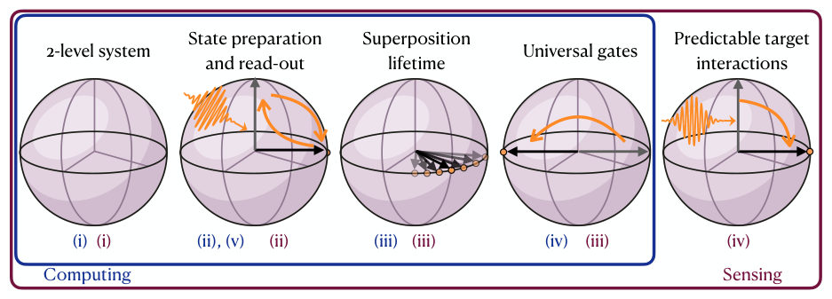
<figcaption class="paper-figure-caption"><b>Fig 1.</b> FIG. 1. A schematic representation of the DiVincenzo (blue) and Degen (red) criteria for a quantum system</figcaption>
</figure>
<figure class="paper-figure-card">
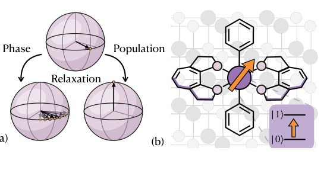
<figcaption class="paper-figure-caption"><b>Fig 2.</b> FIG. 2. (a) Phase and population relaxation represented on a Bloch sphere of a qubit. (b) A molecular qubit</figcaption>
</figure>
<figure class="paper-figure-card">
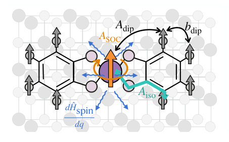
<figcaption class="paper-figure-caption"><b>Fig 3.</b> FIG. 3. Electronic structure parameters required to understand and predict molecular properties necessary</figcaption>
</figure>
<figure class="paper-figure-card">
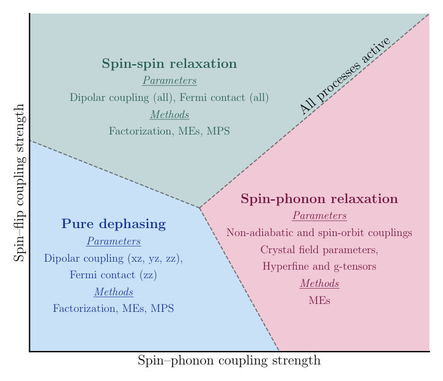
<figcaption class="paper-figure-caption"><b>Fig 4.</b> FIG. 4. Schematic of spin relaxation regimes and primary theoretical methods as a function of spin-flip and</figcaption>
</figure>
<figure class="paper-figure-card">
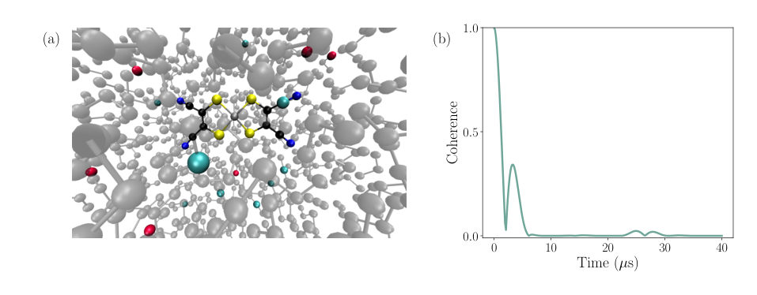
<figcaption class="paper-figure-caption"><b>Fig 5.</b> FIG. 5. (a) Representation of [Ni(mnt)2]−molecule solvated in CS2 where cyan indicates 13C atoms and</figcaption>
</figure>
</div>

<p><strong>Summary.</strong> This theoretical chapter provides a comprehensive guide to rationally designing molecular qubits by connecting fundamental electronic structure theory with open quantum system dynamics. It details how parameters like g-tensors and hyperfine couplings are calculated from first principles, which then feed into models predicting decoherence times ($T_1$ and $T_2$). The ultimate goal is to provide actionable design rules for improving qubit coherence.</p>
<p><strong>Why it may be interesting.</strong> This work is highly relevant as it bridges high-level <em>ab initio</em> electronic structure calculations directly into the framework of open quantum system dynamics necessary for designing practical solid-state qubits.</p>
<details>
<summary>Detailed structure</summary>
<p><strong>Main problem.</strong> The primary goal is designing robust molecular spins for quantum technologies by understanding and mitigating environmental decoherence.</p>
<p><strong>Main result.</strong> The paper establishes theoretical design principles, such as isotopic substitution or spatial spin delocalization, to extend the coherence lifetimes of molecular qubits.</p>
<p><strong>Method.</strong> It employs a combination of advanced theoretical chemistry methods (like multi-reference calculations) to parameterize effective Hamiltonians, which are then analyzed using open quantum system dynamics models.</p>
<p><strong>Model / system.</strong> The physical platform is molecular spins acting as addressable qubits. The model incorporates the full Hamiltonian describing the qubit, surrounding spin bath, qubit-bath interaction, and phonon coupling ($\hat{H}_T$).</p>
<p><strong>Key observables.</strong> Coherence times ($T_1$ and $T_2$), population relaxation, and pure dephasing are the key metrics used to assess qubit robustness.</p>
<p><strong>Important parameters / regimes.</strong> Key parameters derived include g-tensors, zero-field splitting (D), hyperfine tensors (A), and coupling strengths for spin-phonon and spin-spin interactions.</p>
<p><strong>Assumptions / limitations.</strong> The analysis requires modeling the system as an open quantum system, necessitating approximations like the Spin-Boson model or specific limits (e.g., pure dephasing limit) to manage computational complexity.</p>
<p><strong>Figures summary.</strong> Figure 1 schematically compares DiVincenzo and Degen criteria for qubits/sensors, while Figure 2 illustrates the relationship between phase ($ ext{T}_2$) and population ($ ext{T}_1$) relaxation on a Bloch sphere.</p>
<p><strong>Paper structure.</strong> The chapter progresses from defining the need for quantum systems to detailing the full Hamiltonian components (qubit, bath, coupling) and concludes by evaluating a hierarchy of dynamical methods (factorization, MPS) to predict decoherence dynamics.</p>
</details>
<details>
<summary>Abstract</summary>
<p>Molecular spins represent a versatile platform for quantum information science, with the potential to offer chemically tunable, addressable qubits. However, achieving this requires understanding and mitigating quantum decoherence. This Chapter provides a theoretical overview of current state-of-the-art chemical theory connecting ab initio electronic structure with open quantum system dynamics to guide the rational design of long-lived molecular qubits. Beginning at the electronic level, multi-reference and relativistic electronic structure methods to parameterize effective spin Hamiltonians are discussed, with a primary focus on accurately capturing $g$-tensors, zero-field splitting, and hyperfine interactions. These parameters feed into models of spin-phonon and spin-spin coupling to quantify $T_1$ and $T_2$ relaxation across various environmental regimes. This Chapter evaluates a hierarchy of dynamical methods, ranging from factorization to matrix product state approaches, balancing computational cost against accuracy and generalizability. Ultimately, mapping these theoretical models to molecular architecture can establish design principles, such as isotopic substitution and spatial spin delocalization, to understand and extend coherence lifetimes.</p>
</details>
<p><sub><a href="#top">↑ back to top</a></sub></p>

<p><a id="paper-2608.14110"></a></p>
<h3 id="entanglement-certification-via-causal-order-interferometry-in-a-quantum-switch"><a href="http://arxiv.org/abs/2608.14110v1">Entanglement certification via causal-order interferometry in a quantum switch</a></h3>
<p><strong>Authors:</strong> Haojie Wang, Shuheng Liu, Qiongyi He<br>
<strong>Type:</strong> theory · <strong>Category:</strong> quantum information and computing · <strong>PDF:</strong> <a href="https://arxiv.org/pdf/2608.14110v1">https://arxiv.org/pdf/2608.14110v1</a><br>
<strong>Analysis basis:</strong> full PDF text, analyzed in chunks
<strong>Topic relevance:</strong> <code>interference shaping light</code> <strong>3/5</strong> · <code>driven-dissipative phase transition</code> <strong>2/5</strong> · <code>methods for driven-dissipative</code> <strong>2/5</strong> · <code>correlated / nonlocal dissipation</code> <strong>1/5</strong> · <code>quantum measurements</code> <strong>1/5</strong></p>
<div class="figure-strip-hint">↔ Scroll figures horizontally</div>
<div class="paper-figures-scroll">
<figure class="paper-figure-card">
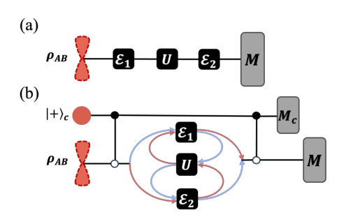
<figcaption class="paper-figure-caption"><b>Fig 1.</b> FIG. 1. Schematic of the preprocessing strategies compared for entanglement certification. (a) In the definite causal order (DCO) benchmark, the target state undergoes the two noisy channels sequen- tially, with a local unitary inserted between them. (b) In the indefinite causal order (ICO) protocol, a control qubit coherently controls the two channel orders. Measuring the control selects a conditional tar- get output, on which the same entanglement measurement is then performed.</figcaption>
</figure>
<figure class="paper-figure-card">
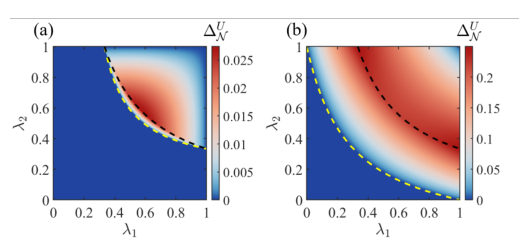
<figcaption class="paper-figure-caption"><b>Fig 2.</b> FIG. 2. Conditional-state negativity gain ∆U N and NPT-certifiable re- gions under two global depolarizing channels on AB. (a) U = I. (b) U = σz ⊗σz. The horizontal and vertical axes denote the depolar- izing parameters λ1 and λ2 of the two channels, and the color scale gives ∆U N. The yellow and black dashed curves mark the ICO and DCO NPT boundaries, respectively; only the ICO protocol certifies NPT entanglement in the region between them.</figcaption>
</figure>
<figure class="paper-figure-card">

<figcaption class="paper-figure-caption"><b>Fig 3.</b> FIG. 3. Postselection probability for the optimal conditional output state under two global depolarizing channels on AB. The probability is plotted as a function of the channel parameters λ1 and λ2. Panels (a) and (b) correspond to the cases without local operations and with the local operation σz ⊗σz, respectively. The blue-to-red color scale indicates an increasing probability for the control outcome that at- tains NU ICO.</figcaption>
</figure>
<figure class="paper-figure-card">

<figcaption class="paper-figure-caption"><b>Fig 4.</b> FIG. 4. Dependence of the negativity of the conditional state on local unitary operations under two depolarizing channels. We take equal identity Kraus weights p1 = p2 = 0.8, corresponding to λ1 = λ2 ≈ 0.787, and α(A) = α(B) = α, θ(A) = θ(B) = θ, ϕ(A) = ϕ(B) = ϕ0. Panels (a)–(b) show the dependence of negativity on θ and α, respectively, with the remaining two parameters fixed at π/4. Orange and blue curves denote the DCO output and the (+) ICO conditional output, respectively. The (+) outcome attains NU ICO and has larger negativity than the DCO output throughout the plotted parameter ranges.</figcaption>
</figure>
<figure class="paper-figure-card">

<figcaption class="paper-figure-caption"><b>Fig 5.</b> FIG. 5. Conditional-state negativity gain versus path difference under local unitary operations. The blue curves denote the negativity gain ∆U N, and the orange curves denote I(U). We set equal identity Kraus weights p1 = p2 = p = 0.8, corresponding to λ1 = λ2 ≈0.787, and α(A) = α(B) = α, θ(A) = θ(B) = θ, ϕ(A) = ϕ(B) = ϕ0. Panels (a)–(b) show the dependence on θ and α, respectively, with the remaining two angular parameters fixed at π/4.</figcaption>
</figure>
</div>

<p><strong>Summary.</strong> This paper investigates using causal-order interferometry (ICO) to certify entanglement in noisy quantum channels. By coherently controlling the sequence of operations via a quantum switch, the authors show that the resulting postselected state can possess significantly more entanglement than any classical mixture of definite order outcomes. This identifies ICO as a superior resource for robust entanglement diagnostics.</p>
<p><strong>Why it may be interesting.</strong> For AMO/open quantum systems researchers, this work provides a theoretical framework showing how coherent control over temporal order can fundamentally enhance diagnostic capabilities for fragile quantum resources like entanglement, going beyond simple averaging over possible orders.</p>
<details>
<summary>Detailed structure</summary>
<p><strong>Main problem.</strong> The core problem is enhancing entanglement certification when quantum states are subjected to noise, especially by leveraging the principles of indefinite causal order (ICO).</p>
<p><strong>Main result.</strong> Postselected ICO outputs can maintain non-zero entanglement negativity in regimes where all classical mixtures of definite causal orders have vanished. This demonstrates that causal-order interferometry is a powerful strategy for robust entanglement certification.</p>
<p><strong>Method.</strong> The authors model the quantum switch as a causal-order interferometer, comparing entanglement measures (like negativity) derived from sequential application (DCO), classical mixing, and postselected coherent interference (ICO).</p>
<p><strong>Model / system.</strong> The study utilizes the quantum switch realizing ICO, treating two noisy channels ($E_1, E_2$) as arms of an interferometer. The analysis is applied to various noise models, including Pauli and amplitude-damping noise.</p>
<p><strong>Key observables.</strong> Entanglement negativity, entanglement witness detection (specifically nondecomposable witnesses for PPT states), and the comparison between ICO, classical mixture, and definite order outputs.</p>
<p><strong>Important parameters / regimes.</strong> The local unitary $U$ inserted between channel uses is a key tunable parameter that controls interference and enlarges the certifiable region. Noise parameters ($\lambda$) are also critical.</p>
<p><strong>Assumptions / limitations.</strong> Each noisy channel is assumed to admit Kraus operators that are product operators with respect to A|B, meaning neither channel generates entanglement from an A|B-separable input.</p>
<p><strong>Figures summary.</strong> Figure 1 schematically compares DCO vs. ICO using a control qubit. Figure 2 and 3 compare the gain in negativity ($\Delta_U^N$) and the size of the ICO-only certifiable region for different local unitaries $U$.</p>
<p><strong>Paper structure.</strong> The paper first establishes the theoretical framework by comparing entanglement measures across DCO, classical mixtures, and postselected ICO outputs. It then quantifies the advantage using specific noise models (Pauli) and demonstrates this enhancement persists in higher dimensions and under other noise types.</p>
</details>
<details>
<summary>Abstract</summary>
<p>Entanglement certification is often performed on states that have already undergone noisy transmission or processing. Noise can reduce the surviving entanglement and can also cause a given criterion to fail even when entanglement remains. In this context, the quantum switch, a paradigmatic realization of indefinite causal order (ICO), coherently controls the orders in which two channels act and has been shown to offer advantages across a range of quantum information-processing tasks. Here we ask whether this coherent control enlarges the noise-parameter region in which entanglement remains certifiable. We regard the two order branches as the arms of a causal-order interferometer and insert a local unitary between the channel uses to tune their interference. For stochastic Pauli noise, a postselected ICO output can exhibit greater entanglement negativity than any classical mixture of the two definite orders; in particular, we identify regimes where its negativity remains nonzero while that of every classical mixture vanishes. A suitable local Pauli unitary substantially enlarges this ICO-only region, while an input-dependent path-difference indicator qualitatively links operator noncommutativity to the postselected negativity gain. Numerical examples extend the advantage to local amplitude-damping noise and two-qutrit Weyl noise. At a representative Weyl-noise point for the $3\times 3$ positive-partial-transpose (PPT) Tiles bound-entangled state, a nondecomposable witness detects the postselected ICO output, whereas an analytic bound excludes detection of the definite-order outputs and their mixtures by the entire locally rotated witness family. These results identify causal-order interferometry as a strategy for enhancing entanglement certification across distinct noise models and dimensions.</p>
</details>
<p><sub><a href="#top">↑ back to top</a></sub></p>

<p><a id="paper-2608.14508"></a></p>
<h3 id="universal-aspects-of-bulk-density-of-states-in-non-hermitian-lattices"><a href="http://arxiv.org/abs/2608.14508v1">Universal aspects of bulk density of states in non-Hermitian lattices</a></h3>
<p><strong>Authors:</strong> Mykhailo Pavliuk, Askar Iliasov, Emil J. Bergholtz, Tomáš Bzdušek<br>
<strong>Type:</strong> theory · <strong>Category:</strong> other · <strong>PDF:</strong> <a href="https://arxiv.org/pdf/2608.14508v1">https://arxiv.org/pdf/2608.14508v1</a><br>
<strong>Analysis basis:</strong> full PDF text, analyzed in chunks
<strong>Topic relevance:</strong> <code>Keldysh / 2PI / non-Gaussian methods</code> <strong>3/5</strong> · <code>driven-dissipative phase transition</code> <strong>2/5</strong> · <code>analog quantum simulation</code> <strong>1/5</strong> · <code>correlated / nonlocal dissipation</code> <strong>1/5</strong> · <code>methods for driven-dissipative</code> <strong>1/5</strong> · <code>non-equilibrium universality</code> <strong>1/5</strong></p>
<div class="figure-strip-hint">↔ Scroll figures horizontally</div>
<div class="paper-figures-scroll">
<figure class="paper-figure-card">

<figcaption class="paper-figure-caption"><b>Fig 1.</b> FIG. 1. Reconstruction of the OBC spectrum from the PBC spectrum. The horizontal (vertical) axis correspond to the real (imaginary) part of 𝑧. Assuming the limiting OBC spectrum is confined to a known codimension-1 subset of C (thick blue curve), the corresponding OBC Green’s function can be obtained by taking the PBC Green’s function in the far-field region (the exterior of the dashed disk) and analytically continuing it into the small-|𝑧| region. The OBC density of states is then recovered from the boundary values of the Green’s function.</figcaption>
</figure>
<figure class="paper-figure-card">

<figcaption class="paper-figure-caption"><b>Fig 2.</b> FIG. 2. Unidirectional Hatano–Nelson model. (a) PBC: 𝐺PBC(𝑧, ¯𝑧) is equal to 1/𝑧outside the unit circle, |𝑧| &gt; 1, and vanishes in- side it. (b) OBC: 𝐺OBC(𝑧, ¯𝑧) is given by 1/𝑧everywhere in the complex plane. The corresponding spectral distributions are schematically illustrated by a blue circle and a blue point, respec- tively. The Green’s functions are represented by the vector fields G(𝑧) = (Re 𝐺(𝑧), −Im 𝐺(𝑧)). The color saturation of the vectors encodes the magnitude of the vector field.</figcaption>
</figure>
<figure class="paper-figure-card">

<figcaption class="paper-figure-caption"><b>Fig 3.</b> FIG. 3. Bidirectional Hatano–Nelson model. For convenience, its “electrostatic potential” Φ(𝑧) is shown, with Φ(𝑧) satisfying 𝐺(𝑧) = 𝜕Φ(𝑧)/𝜕𝑧. Along with the potential, the corresponding spectral functions are depicted in terms of the line charge density per unit arclength, which serve as the sources of the potential. For both the PBC and the OBC systems, we have set 𝑡𝑅= 1, 𝑡𝐿= 0.25. (a) For OBC, the potential is Φ(𝑧) = Re cosh−1(𝑧/𝑐). (b) For PBC, the potential is the same outside the elliptic spectral region, while it is constant inside it. The inset figure shows the difference ΦOBC − ΦPBC, which is exactly zero outside the PBC elliptic spectrum.</figcaption>
</figure>
<figure class="paper-figure-card">

<figcaption class="paper-figure-caption"><b>Fig 4.</b> FIG. 4. Pictorial representation of the Hermitian double of the unidi- rectional Hatano-Nelson model, Eq. (41). Blue and grey sites denote the sublattice degree of freedom introduced by the Hermitian dou- bling. Single-line bonds represent (reciprocal) hopping amplitudes 𝑡1 = 1, while double-line bonds correspond to 𝑡2 = |𝑧|.</figcaption>
</figure>
<figure class="paper-figure-card">

<figcaption class="paper-figure-caption"><b>Fig 5.</b> FIG. 5. Two regimes of the Hermitized Hatano-Nelson model dis- cussed in the main text: for |𝑧| &gt; 1, the Hermitized OBC system is a trivial insulator. In this regime, the absence of zero modes guar- antees that 𝐺OBC𝑁(𝑧) →𝐺B(𝑧, ¯𝑧) = 1/𝑧. For |𝑧| &lt; 1, however, the presence of zero modes prevents one from using strong resolvent convergence to conclude that 𝐺OBC𝑁(𝑧) →𝐺B(𝑧, ¯𝑧); in fact, in this regime 𝐺B(𝑧, ¯𝑧) = 0, while 𝐺OBC𝑁(𝑧) →1/𝑧.</figcaption>
</figure>
</div>

<p><strong>Summary.</strong> This theoretical paper resolves the long-standing ambiguity concerning the definition of the bulk Density of States (DOS) in non-Hermitian lattices. By employing analogies to electrostatics and analyzing the thermodynamic limit, the authors prove that most definitions converge to a single canonical measure called the Brown measure. This provides a robust mathematical framework for understanding spectral properties in open quantum systems.</p>
<p><strong>Why it may be interesting.</strong> This work provides fundamental mathematical rigor to spectral theory in non-Hermitian systems, offering a systematic way to define bulk properties independent of boundary artifacts—a crucial tool for modeling open quantum systems or lattice simulations where boundaries are unavoidable.</p>
<details>
<summary>Detailed structure</summary>
<p><strong>Main problem.</strong> The paper addresses the apparent ambiguity regarding a unique bulk Density of States (DOS) in non-Hermitian lattices caused by strong boundary sensitivity between different boundary conditions.</p>
<p><strong>Main result.</strong> It establishes that this ambiguity is largely illusory, identifying the Brown measure as the canonical bulk DOS and showing that point-gap topology imposes universal constraints on boundary-dependent Green's functions.</p>
<p><strong>Method.</strong> The analysis uses techniques analogous to 2D electrostatics (Gauss' law) applied to the resolvent of non-Hermitian Hamiltonians in the thermodynamic limit, comparing local and global Green's functions.</p>
<p><strong>Model / system.</strong> The study focuses on finite-range tight-binding Hamiltonians defined on lattices, which are analyzed as they approach an infinite lattice Hamiltonian. The comparison is drawn between Open Boundary Conditions (OBC) and Periodic Boundary Conditions (PBC).</p>
<p><strong>Key observables.</strong> Bulk Density of States ($
ho$), Green's function ($G(z)$), multipole moments ($q_m$), and the spectral accumulation behavior inside point gaps.</p>
<p><strong>Important parameters / regimes.</strong> The thermodynamic limit ($N 	o \infty$) and large complex frequencies ($|z|$).</p>
<p><strong>Assumptions / limitations.</strong> Convergence of Green's functions and spectral densities in the distributional sense when taking the thermodynamic limit, particularly for $|z|$ outside a certain range $M$.</p>
<p><strong>Figures summary.</strong> Not specified.</p>
<p><strong>Paper structure.</strong> The paper progresses by first establishing the apparent conflict between boundary conditions, then showing that physical observables (like multipole moments) are invariant in the TL. It culminates by identifying the canonical DOS measure and deriving constraints from point-gap topology.</p>
</details>
<details>
<summary>Abstract</summary>
<p>Non-Hermitian lattice Hamiltonians generally exhibit strong boundary sensitivity, with periodic and open boundary conditions producing distinct density of states (DOS) in the complex-energy plane. This has led to the view that extended non-Hermitian systems lack a unique bulk DOS, with different prescriptions representing inequivalent bulk physics. Here, we show that this apparent ambiguity is largely illusory. For any finite-range tight-binding Hamiltonian, we establish a universal bulk structure: all DOS definitions arising as thermodynamic limits of finite systems share identical multipole moments and generate identical bulk dynamics at finite times and for observables measured far from boundaries. This universality is intimately tied to the thermodynamic Green's functions, which we show to be independent of the boundary condition for large enough complex frequencies. Among all equivalent descriptions, we identify the Brown measure - obtained via Hermitization and resolvent analysis - as a canonical and convenient representative of the bulk DOS, defined directly from the infinite-volume Hamiltonian. We further show that point-gap topology imposes additional universal constraints: boundary-dependent Green's functions are forced to coincide throughout topologically trivial point gaps. This, in particular, provides a systematic criterion, valid in arbitrary dimension, for determining where and how eigenvalues of different boundary truncations can accumulate in the complex plane, and precisely delineates the regime in which the DOS ambiguity retains physical significance.</p>
</details>
<p><sub><a href="#top">↑ back to top</a></sub></p>

<p><a id="paper-2608.14296"></a></p>
<h3 id="entanglement-spectrum-ordering-and-flavor-polarization-in-the-two-flavor-schwinger-model-at-vacuum-angle-math325math"><a href="http://arxiv.org/abs/2608.14296v1">Entanglement spectrum ordering and flavor polarization in the two-flavor Schwinger model at vacuum angle $θ= π$</a></h3>
<p><strong>Authors:</strong> Boliang Yu, Ruixin Zhou, Meisen Gao<br>
<strong>Type:</strong> theory · <strong>Category:</strong> statistical mechanics · <strong>PDF:</strong> <a href="https://arxiv.org/pdf/2608.14296v1">https://arxiv.org/pdf/2608.14296v1</a><br>
<strong>Analysis basis:</strong> full PDF text, analyzed in chunks
<strong>Topic relevance:</strong> <code>analog quantum simulation</code> <strong>3/5</strong> · <code>methods for driven-dissipative</code> <strong>3/5</strong> · <code>correlated / nonlocal dissipation</code> <strong>1/5</strong> · <code>quantum measurements</code> <strong>1/5</strong></p>
<div class="figure-strip-hint">↔ Scroll figures horizontally</div>
<div class="paper-figures-scroll">
<figure class="paper-figure-card">

<figcaption class="paper-figure-caption"><b>Fig 1.</b> Figure 1. Open-boundary link convention, the four-state two-flavor local basis, site-major fermion ordering, the natural staggered unit cell (2j, 2j + 1), and the intra-cell and unit-cell-boundary cut classes. The symbols n, j, and ℓ are integer lattice indices; a is the lattice spacing, and z is a length coordinate with the chain endpoints shown as 0 and Nsa.</figcaption>
</figure>
<figure class="paper-figure-card">

<figcaption class="paper-figure-caption"><b>Fig 2.</b> Figure 2. Bond-resolved (a) entropy and (b) global entanglement-energy gap for the Ns = 24, x = 9, r = 1, χ = 256 state. Intra-cell and unit-cell-boundary cuts are distinguished, and the dotted line marks the central unit-cell boundary ℓ= 12. Both quantities are dimensionless; entropy is reported in nats and ℓis an integer cut index.</figcaption>
</figure>
<figure class="paper-figure-card">

<figcaption class="paper-figure-caption"><b>Fig 3.</b> Figure 3. Representative low-lying entanglement spectrum for the x = 9, Ns = 24, r = 1.5, χ = 256 state at (a) the left adjacent intra-cell cut, (b) the selected unit-cell boundary, and (c) the right adjacent intra-cell cut. Each panel shows the first ten global levels on identical axes. The selected boundary has the leading QA = 0 ↔−1 pair, whereas both adjacent cuts have QA = 0 ↔+1; the tracked QA = −1, FA = ±1 levels remain identifiable at higher ranks. Entanglement energies are dimensionless, and global rank is an ordinal index.</figcaption>
</figure>
<figure class="paper-figure-card">

<figcaption class="paper-figure-caption"><b>Fig 4.</b> Figure 4. Reference-subtracted reorganization of the joint Schmidt-probability distribution at gLphys = 8. Panel (a) shows the selected unit-cell boundary and panel (b) the mirror-combined adjacent intra-cell cut class. The plotted quantities are the changes from the equal-mass state at the same x: the two complementary pair weights and the total non-neutral probability pQA̸=0 = 1 −pQA=0. Lines show the pointwise median over x = 4, 6.25, 9, 12.25, shaded envelopes show their deterministic minimum–maximum range, and faint markers show all four values. The envelopes describe lattice-spacing dependence and are not statistical uncertainties. All plotted quantities, x, r, and gLphys are...</figcaption>
</figure>
<figure class="paper-figure-card">

<figcaption class="paper-figure-caption"><b>Fig 5.</b> Figure 5. State-matched intra-to-boundary ratios versus mass ratio. Panel (a) shows RW = W (−1) F,intra/W (−1) F,boundary for all 42 states, including equal mass. Panel (b) shows RP = P(−1) F,intra/P(−1) F,boundary for the 32 unequal-mass states.</figcaption>
</figure>
</div>

<p><strong>Summary.</strong> This work investigates how entanglement structure reveals underlying physical properties in the two-flavor Schwinger model at $    heta=\pi$. By analyzing the joint Schmidt distribution, the authors successfully separate gauge-sector ordering from flavor polarization effects. The results show that changing the spatial cut fundamentally alters which gauge sector dominates the entanglement spectrum.</p>
<p><strong>Why it may be interesting.</strong> While focused on lattice gauge theory, the use of entanglement spectra as a diagnostic tool to resolve complex symmetries (like charge conjugation) is highly relevant for understanding topological order in quantum many-body systems simulated via tensor networks or MPS.</p>
<details>
<summary>Detailed structure</summary>
<p><strong>Main problem.</strong> The study aims to disentangle three intertwined physical quantities—gauge-charge marginals, pair weights, and flavor asymmetry—encoded within the entanglement spectrum of a gauge theory.</p>
<p><strong>Main result.</strong> The analysis reveals that changing the spatial cut location switches the dominant non-neutral Schmidt pair between $Q_A = -1$ and $Q_A = +1$, while mass imbalance induces measurable flavor polarization away from zero.</p>
<p><strong>Method.</strong> The research employs symmetry-resolved entanglement spectrum analysis using Matrix Product States (MPS) applied to a lattice Hamiltonian formulation.</p>
<p><strong>Model / system.</strong> The system is the two-flavor Schwinger model analyzed on a lattice with open boundary conditions. The Hamiltonian includes hopping, mass, and electric energy terms, focusing calculations on the zero-charge and flavor-neutral canonical sector.</p>
<p><strong>Key observables.</strong> Joint Schmidt distribution $p_{Q_A, F_A}$, gauge-charge marginals ($p_{Q_A}$), conditional polarization ($\mathcal P_F^{(q)}$), and combined pair weights ($W_F^{(q)}$).</p>
<p><strong>Important parameters / regimes.</strong> Vacuum angle $  heta = \pi$, lattice cut location (unit-cell boundary vs. intra-cell cut), and mass imbalance.</p>
<p><strong>Assumptions / limitations.</strong> The analysis is performed on a finite chain realization using open boundary conditions, which may break invariance under staggered charge-conjugation compared to the infinite volume theory.</p>
<p><strong>Figures summary.</strong> Figure 1 illustrates the OBC link convention, local basis construction, and different cut classes used for entanglement measurements.</p>
<p><strong>Paper structure.</strong> The paper systematically analyzes the joint Schmidt distribution by comparing results obtained at unit-cell boundaries versus intra-cell cuts to separate the contributions of gauge sector ordering, pair weight changes, and flavor polarization induced by mass terms.</p>
</details>
<details>
<summary>Abstract</summary>
<p>Entanglement spectra in gauge theories can encode both symmetry breaking and the organization of gauge sectors. In the two-flavor Schwinger model at vacuum angle $θ=π$, we find that the joint Schmidt distribution $p_{Q_A,F_A}$, labeled by the subsystem gauge charge $Q_A$ and flavor imbalance $F_A$, reveals a cut-dependent gauge-sector hierarchy and a mass-induced flavor asymmetry: changing the staggered cut reorganizes the gauge-charge distribution $p_{Q_A}$, while mass imbalance breaks the $F_A\leftrightarrow-F_A$ symmetry of the conditional flavor distribution $p_{F_A|Q_A}$. Defining the combined weight $W_F^{(q)}=p_{q,+1}+p_{q,-1}$ and conditional polarization $\mathcal P_F^{(q)}=(p_{q,+1}-p_{q,-1})/W_F^{(q)}$, we find that changing the cut reverses the weight hierarchy, $W_F^{(-1)}>W_F^{(+1)}$ at unit-cell boundaries but $W_F^{(+1)}>W_F^{(-1)}$ at intra-cell cuts, while mass imbalance drives $\mathcal P_F^{(q)}$ away from zero with a $q$-dependent cut response. Symmetry resolution therefore separates gauge-sector ordering, sector weight, and flavor polarization that are mixed in the globally ordered entanglement spectrum.</p>
</details>
<p><sub><a href="#top">↑ back to top</a></sub></p>

<p><a id="paper-2608.13805"></a></p>
<h3 id="fast-classical-simulation-of-fast-accurate-high-resolution-simulation-of-large-scale-fermi-hubbard-models-on-a-digital-quantum-processor"><a href="http://arxiv.org/abs/2608.13805v1">Fast classical simulation of `Fast, accurate, high-resolution simulation of large-scale Fermi-Hubbard models on a digital quantum processor'</a></h3>
<p><strong>Authors:</strong> Xiao-Yu Ouyang, Runze Chi, Garnet Kin-Lic Chan<br>
<strong>Type:</strong> both · <strong>Category:</strong> numerical methods · <strong>PDF:</strong> <a href="https://arxiv.org/pdf/2608.13805v1">https://arxiv.org/pdf/2608.13805v1</a><br>
<strong>Analysis basis:</strong> full PDF text, analyzed in chunks
<strong>Topic relevance:</strong> <code>methods for driven-dissipative</code> <strong>3/5</strong> · <code>non-equilibrium universality</code> <strong>2/5</strong> · <code>analog quantum simulation</code> <strong>1/5</strong> · <code>quantum measurements</code> <strong>1/5</strong> · <code>scars &amp; prethermalization</code> <strong>1/5</strong></p>
<div class="figure-strip-hint">↔ Scroll figures horizontally</div>
<div class="paper-figures-scroll">
<figure class="paper-figure-card">

<figcaption class="paper-figure-caption"><b>Fig 1.</b> FIG. 1. Transverse contraction of the spacetime tensor net- work (TN) for a 1D fermionic chain. (a) TN diagram of a non- local two-point observable expecation value ⟨ˆQi(t) ˆOj(t)⟩= ⟨ψ0|U †(T) ˆQi ˆOjU(T)|ψ0⟩. (b) The spacetime TN after fold- ing along the dashed line in (a), here the grey shaded part</figcaption>
</figure>
<figure class="paper-figure-card">

<figcaption class="paper-figure-caption"><b>Fig 2.</b> FIG. 2. MPO Heisenberg evolution of an observable in a 1D chain. (a) TN diagram to obtain MPO ˆO(t + dt) from U †(dt) ˆO(t)U(dt). χ is the virtual bond dimension of the op- erator MPO, D is the virtual bond dimension of the unitary MPO, and d is the physical bond dimension of each MPO. (b) Successive randomized compression for the MPO-MPOs product on the most right site, starting from applying ran- dom sketched matrices (green) on the open indices.</figcaption>
</figure>
<figure class="paper-figure-card">

<figcaption class="paper-figure-caption"><b>Fig 3.</b> FIG. 3. Cost-accuracy diagram for the three density ob- servables of the L = 60 Fermi-Hubbard N´eel quench at U/th = −2. Cost is defined by the total runtime to ob- tain the observable dynamics in t ∈[0, 6] with Trotter step dt = 0.2 on one QPU/H200 GPU. Accuracy is defined by the RMSE (Eq. 11) comparing with TDVP χ = 4096 data in t ∈[0, 5.2]. Bond dimension is encoded by color, light to dark as χ grows: blue crosses denote tMPS + RTM with χt = 24, 32, 48, 64, 100, 128, red diamonds denote MPO + SRC with χ = 32, 48, 64, 96, 128, 160, 192, 256, and green tri- angles denote tMPS + SRC with χt = 64, 128, 256, 512. Black squares highlight the MPO + SRC point at χ = 128 and the tMPS + RTM point...</figcaption>
</figure>
<figure class="paper-figure-card">

<figcaption class="paper-figure-caption"><b>Fig 4.</b> FIG. 4. Dynamics of 3 observables from classical and quan- tum simulation. Blue squares are tMPS w/ RTM at χt = 32 and red diamonds are MPO w/ SRC at χ = 128 from t = 0.2 to 6.0; lines connecting their sampling points are guides to the eye. Grey dashed squares are the TDVP χ = 4096 reference [1], the black curve in panel (a) is the TDVP at χeff ≈62 000 from [22], and open purple triangles are HW (decay recov- ery) data, with readout error mitigation and decay recovery applied. (a) Dynamics of one-site observable ⟨n46↑(t)⟩. (b) Dynamics of local two-site observable ⟨n45↓(t)n46↑(t)⟩. (c) Dynamics of nonlocal two-site observable ⟨n30↓(t)n46↑(t)⟩.</figcaption>
</figure>
<figure class="paper-figure-card">

<figcaption class="paper-figure-caption"><b>Fig 5.</b> Figure 3 reports the cumulative wall-clock time re- quired to obtain each observable’s dynamics over 0 &lt; t ≤ 6 with dt = 0.2 on one H200 GPU, with accuracy quanti- fied by the RMSE against the TDVP χ = 4096 reference, with the error measured over the range 0 &lt; t ≤5.2 (i.e. following the methodology in Ref. [1] to define the hard- ware error)</figcaption>
</figure>
</div>

<p><strong>Summary.</strong> The authors developed and benchmarked an efficient tensor network method—transverse contraction—to simulate the time evolution of large Fermi-Hubbard models. They show this classical approach can calculate complex observables faster than current quantum hardware benchmarks while maintaining high accuracy using modest computational resources. This work significantly advances the feasibility of simulating strongly correlated quantum systems on classical supercomputers.</p>
<p><strong>Why it may be interesting.</strong> This work is highly relevant as it provides a concrete demonstration of how advanced numerical techniques can achieve or surpass current quantum simulation capabilities for many-body dynamics, pushing the boundaries of classical computation in condensed matter physics.</p>
<details>
<summary>Detailed structure</summary>
<p><strong>Main problem.</strong> To demonstrate that classical tensor network simulation can simulate quantum quench dynamics of large-scale Fermi-Hubbard models faster and more accurately than the actual quantum processing time.</p>
<p><strong>Main result.</strong> The developed transverse tensor network contraction method can obtain complex observable trajectories in significantly less wall-clock time (e.g., &lt;166s) compared to current hardware benchmarks, using only a modest bond dimension ($\chi=32$).</p>
<p><strong>Method.</strong> The core technique involves simulating time evolution and observables via tensor network contractions, specifically utilizing transverse contraction combined with advanced compression schemes like Successive Randomized Compression (SRC) and Reduced Transition Matrix (RTM).</p>
<p><strong>Model / system.</strong> The study focuses on the Néel quench dynamics of a 1D Fermi-Hubbard model defined by $H = -\sum_{i=0}^{L-2} (c^\dagger_{i\sigma} c_{i+1,\sigma} + 	ext{h.c.}) + U \sum_{i=0}^{L-1} n_{i\uparrow}n_{i\downarrow}$ on a chain of $L=60$ sites.</p>
<p><strong>Key observables.</strong> One- and two-point density correlators, including single-site densities ($\langle n_{i\mu} 
angle$), nearest-neighbor correlations ($\langle n_{i\mu}n_{i+1,\mu'} 
angle$), and all pairs ($\langle n_{i\mu}n_{j\mu'} 
angle$).</p>
<p><strong>Important parameters / regimes.</strong> The simulation uses parameters $t_h = 1$ and $U = -2$, with the key computational parameter being a sufficient bond dimension of $\chi=32$.</p>
<p><strong>Assumptions / limitations.</strong> Accuracy relies on approximations such as transverse contraction and specific compression algorithms (SRC/RTM); the multi-GPU runtime estimate is noted to be a conservative upper bound.</p>
<p><strong>Figures summary.</strong> Figures illustrate the mechanics of Transverse contraction of the spacetime TN, detailing folding and compression steps. Other figures show time evolution plots for local density observables ($\langle n_{46\uparrow} 
angle$) over extended time scales.</p>
<p><strong>Paper structure.</strong> The paper compares multiple classical simulation approaches (MPO+SRC vs. tMPS+RTM vs. Transverse Contraction) against quantum hardware benchmarks, detailing the computational cost and accuracy for calculating various density observables across different timescales.</p>
</details>
<details>
<summary>Abstract</summary>
<p>We study the Néel quench dynamics of a 1D Fermi-Hubbard model which has recently been simulated on quantum hardware. We demonstrate that the set of 7260 observable trajectories measured in the quantum experiment can be obtained more quickly and accurately through classical tensor network simulation using modest computation. Our result relies on transverse tensor network contraction, where a bond dimension of 32 is already sufficient to reproduce the quantum experiment. We further extend the converged observable trajectories to longer times than in the hardware simulation and in other recent classical simulations.</p>
</details>
<p><sub><a href="#top">↑ back to top</a></sub></p>

<p><a id="paper-2608.13892"></a></p>
<h3 id="anomalous-orbital-reconstruction-controlled-by-interorbital-correlations-and-hunds-coupling"><a href="http://arxiv.org/abs/2608.13892v1">Anomalous Orbital Reconstruction Controlled by Interorbital Correlations and Hund's Coupling</a></h3>
<p><strong>Authors:</strong> Yu Ni, Lvjin Wang, Jinfeng Wang, Yunkun Niu, Zhaoming Fu, Yun Song<br>
<strong>Type:</strong> theory · <strong>Category:</strong> strongly correlated electrons · <strong>PDF:</strong> <a href="https://arxiv.org/pdf/2608.13892v1">https://arxiv.org/pdf/2608.13892v1</a><br>
<strong>Analysis basis:</strong> full PDF text, analyzed in chunks
<strong>Topic relevance:</strong> <code>Keldysh / 2PI / non-Gaussian methods</code> <strong>3/5</strong> · <code>analog quantum simulation</code> <strong>2/5</strong> · <code>driven-dissipative phase transition</code> <strong>1/5</strong> · <code>methods for driven-dissipative</code> <strong>1/5</strong></p>
<div class="figure-strip-hint">↔ Scroll figures horizontally</div>
<div class="paper-figures-scroll">
<figure class="paper-figure-card">

<figcaption class="paper-figure-caption"><b>Fig 1.</b> FIG. 1. Orbital reconstruction in the quarter-filled system with JH = 0.05U. (a) Orbital-resolved occupations as a function of the Coulomb interaction strength U. In the weakly correlated regime, the occupation difference is mainly determined by the crystal-field splitting. The occupation of the out-of-plane orbital remains dominant at weak coupling, followed by a sudden transfer of electrons into the in-plane orbital at U ≈6.6, leading to anomalous orbital polarization. (b) Orbital polarization order parameter P as a function of U. The rapid increase and sign change of P indicates the emergence of a correlation-driven orbital-reconstruction transition.</figcaption>
</figure>
<figure class="paper-figure-card">

<figcaption class="paper-figure-caption"><b>Fig 2.</b> FIG. 2. Microscopic origin of correlation-driven orbital reconstruction at quarter filling with JH = 0.05U. (a) Evolution of intraorbital and interorbital double occupancies. D12 denotes the probability of simultaneous occupation of the two orbitals, while D1 and D2 represent intraorbital double occupancies of the in-plane and out-of-plane orbitals, respectively. The suppression of D12 with increasing U indicates enhanced interorbital charge competition. (b) Interorbital charge correlation function C12. The increasing negative correlation before the transition reveals strengthened interorbital charge competition associated with U ′, which drives orbital redistribution.</figcaption>
</figure>
<figure class="paper-figure-card">

<figcaption class="paper-figure-caption"><b>Fig 3.</b> FIG. 3. Correlation-driven evolution from an OP correlated metal to an OP Mott insulator at quarter filling for JH = 0.05U. (a) Orbital-resolved quasiparticle weights Zl as functions of U. The inset highlights that Zl remains finite after orbital polarization emerges, demonstrating that orbital reconstruction precedes Mott localization and produces an orbital-polarized (OP) correlated metallic phase. The vanishing of Zl near U = 8.0 signals the Mott transition. (b) Orbital-resolved spectral functions at U = 7.0, corresponding to the OP correlated metal. (c) Orbital-resolved spectral functions at U = 8.0, corresponding to the OP Mott insulator.</figcaption>
</figure>
<figure class="paper-figure-card">

<figcaption class="paper-figure-caption"><b>Fig 4.</b> FIG. 4. Hund’s coupling dependence of orbital reconstruction and quasiparticle coherence in the quarter-filled system. (a) Orbital polarization order parameter P as a function of U for JH = 0. The orbital-reconstruction transition occurs at U ≈6.0, where P rapidly increases from a weakly polarized metallic state to an OP state. (b) Evolution of P for strong Hund’s coupling (JH = 0.20U). The orbital polarization is strongly suppressed and remains nearly absent over the whole interaction range. (c) Quasiparticle weights Zl for JH = 0. The vanishing of Zl identifies the transition from an OP correlated metal phase to an OP Mott insulating phase. The inset highlights the finite quasiparticle...</figcaption>
</figure>
<figure class="paper-figure-card">

<figcaption class="paper-figure-caption"><b>Fig 5.</b> FIG. 5. Phase diagram of the quarter-filled system in the U–JH/U plane. The phase boundaries are determined from the evolution of orbital polarization parameter order and quasiparticle weights. Three different phases are identified: metallic phase, OP correlated metal phase, and OP Mott insulating phase. Increasing Hund’s coupling systematically shifts the orbital-polarization and localization boundaries toward larger interaction strengths and eventually suppresses all OP phases.</figcaption>
</figure>
</div>

<p><strong>Summary.</strong> This work uses DMFT on a two-orbital Hubbard model to explain how electronic correlations drive anomalous orbital polarization in low-dimensional oxides. The key finding is that interorbital charge competition dictates this reconstruction, while Hund's coupling fine-tunes the stability of these correlated phases based on electron filling.</p>
<p><strong>Why it may be interesting.</strong> While focused on solids, the mechanism of correlation-driven spectral weight redistribution and phase transitions (metal to insulator) using advanced many-body techniques is highly relevant for understanding strongly correlated quantum systems in general.</p>
<details>
<summary>Detailed structure</summary>
<p><strong>Main problem.</strong> The study addresses the unresolved microscopic origin of anomalous orbital polarization in low-dimensional correlated oxides, stemming from the competition between crystal-field effects, electronic correlations, and orbital dimensionality.</p>
<p><strong>Main result.</strong> Anomalous orbital polarization is driven by interorbital Coulomb interaction-induced charge competition, leading to an orbital-polarized metal that can transition into a Mott insulator. Hund's coupling acts as a filling-dependent regulator, suppressing this polarization at half-filling.</p>
<p><strong>Method.</strong> The research employs Dynamical Mean-Field Theory (DMFT) applied to a two-orbital Hubbard model to analyze the system's electronic structure and phase transitions.</p>
<p><strong>Model / system.</strong> The model uses a two-orbital Hubbard Hamiltonian capturing essential physics of quasi-two-dimensional oxides. It includes orbital-dependent hopping, on-site energies, and interaction terms ($U, U', J_H$).</p>
<p><strong>Key observables.</strong> Orbital polarization parameter (P), quasiparticle weight ($Z_l$), local charge correlations (e.g., $D_{12}$), and spectral functions $A_l(\omega)$.</p>
<p><strong>Important parameters / regimes.</strong> Interaction strengths ($U, U', J_H$), filling level (quarter vs. half filling), and orbital-dependent dimensionality.</p>
<p><strong>Assumptions / limitations.</strong> The two-orbital reduction is assumed sufficient to capture the key physics of orbital competition; DMFT approximations are used throughout the calculations.</p>
<p><strong>Figures summary.</strong> Figures illustrate the evolution of polarization ($P$) and occupation with interaction strength ($U$), showing sign changes indicating correlation-driven transitions. They also compare spectral weight redistribution in different dimensional models.</p>
<p><strong>Paper structure.</strong> The paper establishes the physical problem, details the two-orbital Hubbard model Hamiltonian, applies DMFT calculations to track observables like polarization and double occupancy as interactions increase, and finally analyzes the specific role of Hund's coupling at different fillings.</p>
</details>
<details>
<summary>Abstract</summary>
<p>The microscopic origin of anomalous orbital polarization in a class of low-dimensional correlated oxides remains unresolved due to the competition among crystal-field effects, electronic correlations, and orbital-dependent dimensionality. Using dynamical mean-field theory, we investigate a two orbital Hubbard model with orbital-dependent dimensionality and reveal the mechanism for anomalous orbital polarization through orbital reconstruction beyond the bare crystal-field picture. We identify interorbital Coulomb interaction-induced charge competition as a key microscopic mechanism responsible for the orbital redistribution, which leads first to an orbital-polarized correlated metal and subsequently to an orbital-polarized Mott insulator. We further find that Hund's coupling acts as a filling-dependent regulator of orbital reconstruction. It weakens the correlation-induced orbital redistribution at quarter filling by competing with interorbital charge fluctuations, while at half filling it completely suppresses the orbital-polarized state by stabilizing high-spin orbital-balanced configurations. These results provide a unified picture of correlation driven orbital reconstruction and highlight the relevance of interorbital interactions and Hund's coupling for understanding orbital phenomena in low-dimensional transition-metal oxides.</p>
</details>
<p><sub><a href="#top">↑ back to top</a></sub></p>

<p><a id="paper-2608.14169"></a></p>
<h3 id="classical-limits-of-spectral-filtering-in-quantum-generative-models"><a href="http://arxiv.org/abs/2608.14169v1">Classical Limits of Spectral Filtering in Quantum Generative Models</a></h3>
<p><strong>Authors:</strong> Marco Roth<br>
<strong>Type:</strong> theory · <strong>Category:</strong> quantum information and computing · <strong>PDF:</strong> <a href="https://arxiv.org/pdf/2608.14169v1">https://arxiv.org/pdf/2608.14169v1</a><br>
<strong>Analysis basis:</strong> full PDF text, analyzed in chunks
<strong>Topic relevance:</strong> <code>interference shaping light</code> <strong>3/5</strong> · <code>quantum measurements</code> <strong>2/5</strong> · <code>driven-dissipative phase transition</code> <strong>1/5</strong> · <code>methods for driven-dissipative</code> <strong>1/5</strong></p>
<div class="figure-strip-hint">↔ Scroll figures horizontally</div>
<div class="paper-figures-scroll">
<figure class="paper-figure-card">

<figcaption class="paper-figure-caption"><b>Fig 1.</b> FIG. 1. Overview of this work. (a) The two routes from the same quantum generative model Eq. (1). Coherent route (left): a QFT exposes the amplitude spectrum, a spectral filter attenuates it, ˆa(k) 7→g(k)ˆa(k) (dashed: Gaussian low-pass at matched cost psucc ≥p⋆), and measuring after the inverse QFT yields the filtered distribution pg. Classical route (right): measuring first yields samples of p(x) = |ax|2, which are convolved with a classical kernel K. The gap Φg, Eq. (9), measures what the coherent route achieves beyond classical smoothing. The example shows the optimal kernel (TV = 0.17). (b) The resulting classification. At matched cost, a magnitude filter (|g(k)| ≤1) either returns an...</figcaption>
</figure>
<figure class="paper-figure-card">

<figcaption class="paper-figure-caption"><b>Fig 2.</b> FIG. 2. (a) Geometry of the coherent residual Rg [Eq. (10)] at a fixed lag m. For a given input distribution ˆp(m), the coherent filter can rotate the modes pg(m) [Eq. (5)], while classical smoothing can only rescale each mode by the real factor ˆK(m), resulting in ˆpG(m) [Eq. (4)]. All modes reachable by classical smoothing are thus on a line Lm = {hˆp(m) : h ∈R} through the origin. The best classical value h⋆(m)ˆp(m) is the orthogonal projection of ˆpg(m) onto the line Lm. The coherent residual Rg is the perpendicular component, which cannot be removed by a kernel. The rotation of ˆpg(m) off Lm is set by arg⟨Wm⟩ρm, with Rg(m) ∝Im⟨Wm⟩ρm. (b) Relationship between the filter Fourier...</figcaption>
</figure>
<figure class="paper-figure-card">

<figcaption class="paper-figure-caption"><b>Fig 3.</b> FIG. 3. Input families for a Gaussian low-pass filter Eq. (24) at the affordable passband scale σ⋆(n) [Eq. (13)] at p⋆= 0.1. (a) The affordable passband scale for the constructed families and quantum circuits [cf. Sec. II A] with random and with trained parameters. The closed form solution for Gaussian input spectra Eq. (27) is shown as dotted (black). (b) The phase certificate Cg [Eq. (19)] as a function of the modes M ⋆[Eq. (14)] required to achieve an error of ϵ = 0.05. Each family is a track parametrised by n. The arrows point towards large n. For the coherent chirp and the spectrally incoherent input, the Gaussian-kernel upper bound on Φg is shown as a dashed line with the enclosed...</figcaption>
</figure>
</div>

<p><strong>Summary.</strong> This work analyzes spectral filtering in quantum generative models to determine if it offers a true quantum advantage over classical data processing. The authors find that most magnitude filters are simulable classically, suggesting the quantum benefit is subtle. Any remaining separation relies critically on the initial phase structure of the input state.</p>
<p><strong>Why it may be interesting.</strong> It provides a rigorous mathematical framework for determining when quantum amplitude manipulation yields non-classical information inaccessible through simple measurement statistics or post-processing kernels.</p>
<details>
<summary>Detailed structure</summary>
<p><strong>Main problem.</strong> The paper investigates whether applying coherent spectral filtering in quantum generative models provides a true advantage over classical post-processing of samples from the unfiltered model.</p>
<p><strong>Main result.</strong> A significant quantum-classical separation is generally not created by magnitude filters; any surviving gap must be inherited from the initial spectral phase. Pure phase filters are identified as the only operations exempt from these constraints.</p>
<p><strong>Method.</strong> The analysis compares coherent filtering (via QFT and diagonal filtering in the frequency domain) against classical smoothing, quantified using the Total Variation distance ($\Phi_g$).</p>
<p><strong>Model / system.</strong> The model is a quantum circuit Born machine generating probability distributions $p(x; 	heta)$ from an underlying state $|\psi(	heta)
angle$. The analysis focuses on manipulating the amplitude spectrum $\hat{a}(k)$.</p>
<p><strong>Key observables.</strong> Total Variation distance ($\Phi_g$), spectral phase of the input state, and the complex weight average $\langle W_m 
angle_{
ho_m}$.</p>
<p><strong>Important parameters / regimes.</strong> The affordability threshold for filtering; the structure of the filter $g(k)$ (magnitude vs. pure phase).</p>
<p><strong>Assumptions / limitations.</strong> The comparison is made at matched sampling cost, and the classical competitor only has access to the measured distribution $p(x)$.</p>
<p><strong>Figures summary.</strong> Figure 1 contrasts coherent filtering with classical convolution; Figure 2 visualizes the residual coherence showing how classical smoothing restricts the possible outcomes.</p>
<p><strong>Paper structure.</strong> The paper establishes the problem by comparing two spectral manipulation routes, derives necessary and sufficient conditions for equivalence to classical methods (Proposition 1), classifies filters based on magnitude/phase properties, and concludes with numerical confirmation of these theoretical bounds.</p>
</details>
<details>
<summary>Abstract</summary>
<p>Spectral filtering has been proposed as a route to regularization in quantum generative models: the quantum Fourier transform exposes the amplitude spectrum of a quantum circuit Born machine, and a diagonal filter suppresses the high frequencies associated with finite-sample noise, an operation whose classical counterpart seemingly requires manipulating an exponentially long amplitude vector. We examine whether this coherent operation produces anything that classical post-processing of samples from the unfiltered model cannot match. Measuring the filter against convolution with a symmetric probability kernel at matched sampling cost, which accounts for the post-selection overhead of attenuation, we derive necessary and sufficient conditions for the gap between the two to vanish. Magnitude (attenuating) filters obey a dichotomy: at a fixed affordability threshold, the filtered output is either a constant-size Fourier object with an efficient classical sampler, or the passband must widen until no fixed frequency is attenuated and the filter no longer smooths. In neither case does the filter create a quantum-classical separation. Whatever separation survives is inherited from the spectral phase of the input state. Numerical experiments on trained circuit Born machines confirm the classification and show that the deciding phases are invisible to the Born-rule training loss and set by the initialization. Within the diagonal family, pure phase filters remain the only spectral operations exempt from these constraints.</p>
</details>
<p><sub><a href="#top">↑ back to top</a></sub></p>

<p><a id="paper-2608.14214"></a></p>
<h3 id="exchange-only-qubit-stabilized-by-a-single-spin-qubit"><a href="http://arxiv.org/abs/2608.14214v1">Exchange-only qubit stabilized by a single-spin qubit</a></h3>
<p><strong>Authors:</strong> Irina Heinz, Mira Sharma, Joris Kattemölle<br>
<strong>Type:</strong> theory · <strong>Category:</strong> quantum information and computing · <strong>PDF:</strong> <a href="https://arxiv.org/pdf/2608.14214v1">https://arxiv.org/pdf/2608.14214v1</a><br>
<strong>Analysis basis:</strong> full PDF text, analyzed in chunks
<strong>Topic relevance:</strong> <code>quantum measurements</code> <strong>3/5</strong> · <code>QC/QI experiment</code> <strong>2/5</strong> · <code>correlated / nonlocal dissipation</code> <strong>1/5</strong> · <code>methods for driven-dissipative</code> <strong>1/5</strong></p>
<div class="figure-strip-hint">↔ Scroll figures horizontally</div>
<div class="paper-figures-scroll">
<figure class="paper-figure-card">

<figcaption class="paper-figure-caption"><b>Fig 1.</b> Figure 1. Schematic of a shuttling-based hybrid spin qubit ar- chitecture to implement quantum error correction with a high- level code, e.g. the surface code, where data and auxiliary qubits of the surface code are (singlet-only) exchange-only qubits. The blue double-headed arrows indicate exchange in- teractions between spins. (SO)EO qubits can travel across the chip via shuttling lines. In fact, any spin can be shuttled across the chip, enabling arbitrary connectivity. Additional auxiliary Loss-DiVincenzo (LD) qubits can be used for er- ror detection in the (SO)EO encoding via shuttling between (SO)EO qubits and LD control zones where single-spin rota- tions are possible.</figcaption>
</figure>
<figure class="paper-figure-card">

<figcaption class="paper-figure-caption"><b>Fig 2.</b> Figure 2. (a) Simultaneous exchange pulse between each EO qubit spin (1, 2 and 3) and one LD qubit (4) leads to an ex- change between the gauge information and the LD spin pro- jection. (b) Measurement probability of states |0+⟩|↓⟩and |0−⟩|↑⟩for the initial state |0+⟩|↓⟩evolving in time accord- ing to Eq. (1). The red vertical line in the middle corresponds to the gate time tg = π/J, where J = 100 MHz. (c) Infi- delity depending on relative noise on the exchange interaction strength for the gate U(tg) in Eq. (2). (d) Error probability p after k repetitions of performing the unitary U(tg) with rel- ative gate noise σ/J followed by a measurement of the LD qubit in the z-basis. The error is...</figcaption>
</figure>
<figure class="paper-figure-card">

<figcaption class="paper-figure-caption"><b>Fig 3.</b> Figure 3. (a) SOEO qubit with exchange couplings Jij. (b) Error model for circuit components. (c) Fault-tolerant ZZZZ and (d) XXXX measurements using the relations in Fig. 8.</figcaption>
</figure>
<figure class="paper-figure-card">

<figcaption class="paper-figure-caption"><b>Fig 4.</b> Figure 4. State simulation of the fault-tolerant error detection circuit in Fig. 3c and d averaged over the X, Y , and Z eigenstates of the encoded qubit. Noise is modeled as depolarizing noise on the gates plus an incoming weight-one (red tones) or weight-four (blue tones) fault followed by a noiseless round of error detection. The circuit was simulated with and without the lower flag qubit and the respective gates. (a) Acceptance rates with and without flag. (b) Success probabilities depending on the spin error pspin for incoming weight-one faults which correspond to the acceptance after the noiseless detection step. The error probability is shown without QED in light red, with QED...</figcaption>
</figure>
<figure class="paper-figure-card">

<figcaption class="paper-figure-caption"><b>Fig 5.</b> Figure 5. Memory experiment simulation over a varying num- ber of quantum error detection cycles. (a) The two types of idling probability decay (i) pidle(t) = 3(1 −e−(t/T )2)/4, and (ii) pidle(t) = 3(1 −e−t/T )/4. (b) Acceptance rate for type-(i) decay without QED (blue) and with QED (red), and similarly for type-(ii) decay in cyan and pink. (c) Qubit error rate over a varying number of QED cycles for type-(i) decay. The sim- ulations including the QED cycles are shown in red and are fitted as described in the main text. Note that although the error model is type-(i), the fit is to an effective type-(ii) error model in the number of cycles. The comparable idling experi- ment, without QED...</figcaption>
</figure>
</div>

<p><strong>Summary.</strong> This paper proposes utilizing exchange-only (EO) and singlet-only EO ((SO)EO) qubits within a hybrid architecture to achieve fault tolerance for spin qubits. By implementing error detection at the lowest encoding level, the method converts environmental noise into detectable erasures, significantly enhancing quantum computation reliability. The results establish the SOEO qubit as a promising logical encoding for future solid-state quantum processors.</p>
<p><strong>Why it may be interesting.</strong> This work directly addresses hardware limitations in quantum computing by proposing novel encoding schemes and error detection mechanisms that are physically realizable using spin interactions in solid-state platforms.</p>
<details>
<summary>Detailed structure</summary>
<p><strong>Main problem.</strong> The primary goal is developing fault-tolerant quantum computation protocols for spin qubits by leveraging the extra degrees of freedom in exchange-only (EO) and singlet-only EO ((SO)EO) qubits to enable error detection at the lowest encoding level.</p>
<p><strong>Main result.</strong> The proposed approach effectively converts charge and nuclear noise into erasures through low-level error detection, establishing the SOEO qubit as a viable logical encoding for fault-tolerant gate constructions.</p>
<p><strong>Method.</strong> The work involves theoretical analysis of quantum gates (like iSWAP transitions) and simulating error correction cycles using protocols that measure auxiliary qubits to project the state onto an error-free subspace.</p>
<p><strong>Model / system.</strong> The system is based on semiconductor-based spin qubits, utilizing a hybrid architecture combining Loss–DiVincenzo (LD) qubits with EO/SOEO qubits. The interactions are governed by exchange coupling ($J$) between multiple spins.</p>
<p><strong>Key observables.</strong> Gate fidelity, error probability ($p$), acceptance rates, and the scaling of error probability under different noise models.</p>
<p><strong>Important parameters / regimes.</strong> Noise parameters ($\sigma/J$, $p_{	ext{spin}}$), gate time ($t_g = \pi/J$), and the relative strength of coupling to noise sources.</p>
<p><strong>Assumptions / limitations.</strong> The analysis assumes independent fluctuation of exchange interactions for initial error modeling, and that measurement on auxiliary qubits can project the state effectively.</p>
<p><strong>Figures summary.</strong> Figures illustrate the hybrid qubit architecture (Surface Code example), the mechanism of gauge information swapping via simultaneous exchange pulses, and quantitative comparisons of gate fidelity vs. noise ($\sigma/J$) and error probability scaling with fault detection mechanisms.</p>
<p><strong>Paper structure.</strong> The paper progresses from establishing the physical system (hybrid spin qubits) to demonstrating a specific protocol for error detection using LD measurement on EO qubits. It then extends this analysis to the SOEO qubit, proving its fault-tolerant readout capability by comparing performance under single-spin vs. worst-case multi-spin noise.</p>
</details>
<details>
<summary>Abstract</summary>
<p>Hybrid approaches that combine different spin qubit encodings offer promising advantages. In particular, the additional degrees of freedom available in exchange-only qubits and their extensions enable enhanced spin lifetimes and facilitate error detection through the use of auxiliary spins. We show that integrating Loss-DiVincenzo with exchange-only qubits provides a practical route to realizing these benefits while remaining compatible with spin-shuttling architectures. We further demonstrate how the singlet-only exchange-only qubit can be employed for error detection, and we present a fault-tolerant $π$-rotation about each of the three control axes of the (singlet-only) exchange-only qubit. By enabling error detection at the lowest encoding level, our approach effectively converts charge and nuclear noise into erasures, thereby suppressing error propagation and potentially enhancing the performance of quantum error-correction schemes. More broadly, our work establishes a new perspective on the singlet-only exchange-only qubit as a logical encoding, opening the door to fault-tolerant gate constructions and spin-tailored quantum error-correction protocols for semiconductor-based quantum computing.</p>
</details>
<p><sub><a href="#top">↑ back to top</a></sub></p>

<p><a id="paper-2608.14208"></a></p>
<h3 id="foundation-neural-effective-hamiltonian-for-strongly-correlated-quantum-materials"><a href="http://arxiv.org/abs/2608.14208v1">Foundation Neural Effective Hamiltonian for Strongly Correlated Quantum Materials</a></h3>
<p><strong>Authors:</strong> Lixing Zhang, Hongjie Jiang, Di Luo<br>
<strong>Type:</strong> theory · <strong>Category:</strong> strongly correlated electrons · <strong>PDF:</strong> <a href="https://arxiv.org/pdf/2608.14208v1">https://arxiv.org/pdf/2608.14208v1</a><br>
<strong>Analysis basis:</strong> full PDF text, analyzed in chunks
<strong>Topic relevance:</strong> <code>analog quantum simulation</code> <strong>3/5</strong> · <code>methods for driven-dissipative</code> <strong>3/5</strong> · <code>Keldysh / 2PI / non-Gaussian methods</code> <strong>1/5</strong></p>
<div class="figure-strip-hint">↔ Scroll figures horizontally</div>
<div class="paper-figures-scroll">
<figure class="paper-figure-card">

<figcaption class="paper-figure-caption"><b>Fig 1.</b> FIG. 1. Schematic of the FNEH method. For a multi-parameter Hamiltonian, the parameters λ are embedded into an FNQS, which outputs parameter-dependent wavefunction amplitudes. By sampling FNQS wavefunctions at different locations in parameter space, an effective Hamiltonian that depends linearly on λ is constructed. The effective Hamiltonian can then be rapidly reconstructed and solved across parameter space, generating a manifold of approximate ground-state wavefunctions.</figcaption>
</figure>
<figure class="paper-figure-card">

<figcaption class="paper-figure-caption"><b>Fig 2.</b> FIG. 2. Ground-state energies predicted by different meth- ods. The system parameters are Nsite = 27, Ne = 18 (2/3 filling), V = 15meV, and ϵ = 10. (a) Per-particle energy differences relative to the optimal reference for the FNQS, FNEH, Hartree-Fock (HF), and exact diagonalization (ED). Background colors indicate the different phases. The left and right dashed lines indicate the phase boundaries predicted by the optimal reference and FNQS, respectively. (b) Illustra- tion of the basis-state selection used to construct the FNEH. (c) Charge densities predicted by the FNQS and FNEH at ϕ = 40.75◦.</figcaption>
</figure>
<figure class="paper-figure-card">

<figcaption class="paper-figure-caption"><b>Fig 3.</b> FIG. 3. PESs in the V –ϕ plane predicted by the FNEH. The system parameters are Nsite = 36, Ne = 12 (1/3 filling), and ϵ = 10. Gray triangles indicate the basis states used to con- struct the FNEH. (a) Coulomb-energy PES, Ecoul, predicted by FNEH over V ∈[9meV, 11meV] and ϕ ∈[35◦, 45◦]. (b) Cross-section of (a) along the ϕ direction at fixed V = 10meV, compared with the FNQS and optimal reference energies eval- uated at 1◦intervals. (c,d) FNEH-predicted PESs of the total energy, Etot, and kinetic energy, Ekin, respectively.</figcaption>
</figure>
<figure class="paper-figure-card">

<figcaption class="paper-figure-caption"><b>Fig 4.</b> FIG. 4. FNEH captures the phase transition across ϵ while demonstrating high computational efficiency. (a) Total- energy differences relative to the optimal reference predicted by FNEH and the FNQS as a function of ϵ. The system pa- rameters are Nsite = 36, Ne = 12 (1/3 filling), V = 11meV, and ϕ = 40◦. (b) Energy components predicted by optimal reference, FNEH, and FNQS across ϵ. FNEH energies are evaluated at intervals of 0.1 in ϵ, whereas the FNQS and op- timal reference energies are evaluated at intervals of 1. (c) Optimal weights of the FNEH basis states as a function of ϵ. (d) Radially averaged pair-correlation functions predicted by the optimal reference, FNQS, and FNEH. (e)...</figcaption>
</figure>
</div>

<p><strong>Summary.</strong> This paper introduces the Foundation Neural Effective Hamiltonian (FNEH), an advanced technique to simulate quantum materials across families of Hamiltonians. FNEH projects the full Hamiltonian onto a compact subspace derived from pre-trained neural network states, allowing for accurate and computationally cheap mapping of phase diagrams. This represents a significant step toward systematically exploring complex parameter spaces in strongly correlated condensed matter physics.</p>
<p><strong>Why it may be interesting.</strong> The development provides a powerful, scalable tool for mapping out complex phase diagrams in strongly correlated systems where traditional diagonalization or single-point NQS calculations fail due to computational cost or insufficient coverage of the parameter space.</p>
<details>
<summary>Detailed structure</summary>
<p><strong>Main problem.</strong> Developing a scalable method to simulate strongly correlated quantum materials whose ground states evolve across a continuous family of experimentally tunable Hamiltonians.</p>
<p><strong>Main result.</strong> The proposed Foundation Neural Effective Hamiltonian (FNEH) accurately resolves competing quantum phases and enables high-resolution phase scans while drastically reducing computational cost compared to previous methods.</p>
<p><strong>Method.</strong> FNEH projects the full Hamiltonian family onto a compact subspace spanned by pre-trained Foundation Neural Quantum States (FNQS), allowing for efficient, parameter-dependent reconstruction of the effective Hamiltonian matrix elements.</p>
<p><strong>Model / system.</strong> The study uses strongly correlated moiré materials as a testbed, governed by a tunable Hamiltonian $\hat{H}(\lambda)$ involving kinetic and Coulomb interaction terms. The methodology builds upon FNQS to create a variational framework over parameter space.</p>
<p><strong>Key observables.</strong> Ground-state energies ($E_{	ext{tot}}$), charge densities ($
ho$), Potential Energy Surfaces (PES) of Coulomb energy, and identification of quantum phase boundaries (e.g., CDW to FL transitions).</p>
<p><strong>Important parameters / regimes.</strong> Tunable couplings $\lambda$ (e.g., moiré potential strength $V_0$, phase $\phi$, dielectric constant $\epsilon$).</p>
<p><strong>Assumptions / limitations.</strong> The method relies on the initial training of FNQS over a parameter manifold and assumes that projecting onto the subspace spanned by these states provides sufficient variational accuracy.</p>
<p><strong>Figures summary.</strong> Figures compare ground-state energies predicted by various methods (FNQS, FNEH, HF, ED) for moiré systems, demonstrating FNEH's ability to correctly locate phase boundaries across parameter space.</p>
<p><strong>Paper structure.</strong> The paper introduces the limitations of FNQS for sweeping Hamiltonian families. It then details the FNEH construction by projecting $\hat{H}(\lambda)$ onto a compact subspace defined by sampled FNQS states, followed by demonstrations on moiré materials showing improved accuracy and efficiency over conventional methods.</p>
</details>
<details>
<summary>Abstract</summary>
<p>Simulating strongly correlated quantum materials often involves not a single Hamiltonian, but a family of Hamiltonians whose ground states evolve across experimentally tunable couplings. Foundation neural quantum states (FNQS) offer a promising route to amortizing many-body calculations across such families, but can lose accuracy near phase transitions and still incur non-negligible sampling costs that grow with the number of target couplings. We introduce the Foundation Neural Effective Hamiltonian (FNEH), which projects a Hamiltonian family onto a compact subspace spanned by FNQS sampled at selected couplings. By variationally combining FNQS across parameter space, FNEH systematically improves their ground-state approximation and can recover phase boundaries that the foundation model misidentifies. Once the required operator matrix elements are sampled, FNEH enables sweeps over couplings, observables, and phase boundaries at a cost governed by the small effective-Hamiltonian dimension, without repeated neural-network sampling at every target coupling. We demonstrate FNEH in strongly correlated moiré materials, where it accurately resolves competing phases, enables high-resolution multidimensional phase scans, and substantially reduces the computational cost of exploring many target Hamiltonians. The results open a new avenue for studying strongly correlated quantum materials with foundation models.</p>
</details>
<p><sub><a href="#top">↑ back to top</a></sub></p>

<p><a id="paper-2608.13848"></a></p>
<h3 id="posterior-inference-of-hamiltonian-parameters-from-rixs-spectroscopy"><a href="http://arxiv.org/abs/2608.13848v1">Posterior Inference of Hamiltonian Parameters from RIXS Spectroscopy</a></h3>
<p><strong>Authors:</strong> Samuel Klein, Thomas M. Linker, Louis Conreux, Daniel Ratner, Apurva Mehta, Makoto Tachibana, Jiemin Li, Jonathan Pelliciari, Valentina Bisogni, Wei He, Xiangpeng Luo, Mark P. M. Dean, Marton K. Lajer, Michael Kagan, Joshua J. Turner, Yongqiang Cheng, Sean Gasiorowski<br>
<strong>Type:</strong> both · <strong>Category:</strong> strongly correlated electrons · <strong>PDF:</strong> <a href="https://arxiv.org/pdf/2608.13848v1">https://arxiv.org/pdf/2608.13848v1</a><br>
<strong>Analysis basis:</strong> full PDF text, analyzed in chunks
<strong>Topic relevance:</strong> <code>methods for driven-dissipative</code> <strong>3/5</strong> · <code>quantum measurements</code> <strong>2/5</strong> · <code>Keldysh / 2PI / non-Gaussian methods</code> <strong>1/5</strong> · <code>analog quantum simulation</code> <strong>1/5</strong></p>
<div class="figure-strip-hint">↔ Scroll figures horizontally</div>
<div class="paper-figures-scroll">
<figure class="paper-figure-card">

<figcaption class="paper-figure-caption"><b>Fig 1.</b> FIG. 1. Overview of the experimental and inference pipeline. An incident X-ray photon resonantly excites a 2p core electron into an unoccupied valence state, creating a core-hole intermediate state that decays as a valence electron refills the hole and a scattered photon is emitted, leaving the system in a dd-excited final state. The energy loss of the scattered photon encodes the excitation energy, and scanning over incident energies builds up the observed 2D spectrum xobs. The column-ViT encoder divides xobs into column-wise patches along the incident-energy axis, embeds each patch with a shared Multi-Layer Perceptron (MLP), and passes the resulting tokens together with a learnable CLS...</figcaption>
</figure>
<figure class="paper-figure-card">

<figcaption class="paper-figure-caption"><b>Fig 2.</b> FIG. 2. Far left: the experimentally measured NiPS3 RIXS spectrum. Center left: the simulated spectrum at the by-hand reference values. Center: the simulated spectrum at the Lajer et al. [9] reference parameter values after fine-tuning. Center right: the posterior predictive spectral mean. Far right: the simulated spectrum evaluated at the posterior mean of the SBI posterior.</figcaption>
</figure>
<figure class="paper-figure-card">

<figcaption class="paper-figure-caption"><b>Fig 3.</b> FIG. 3. Posterior predictive check for NiPS3. Parameter sets drawn from the posterior are forward-simulated with EDRIXS and projected onto one-dimensional slices. Left panels show three non-overlapping ∆ωin bins of width 4 eV ([0, 4], [4, 8], and [8, 12] eV, left to right); the right panel shows summed intensity over all ℏΩas a function of ∆ωin. Shaded bands span the 95% credible interval of the predictive distribution, the solid black curve is the observed data, and the dashed green line is the Bayesian optimization result [9].</figcaption>
</figure>
<figure class="paper-figure-card">

<figcaption class="paper-figure-caption"><b>Fig 4.</b> FIG. 4. Marginal posterior distributions for all parameters inferred from the observed NiPS3 data. Each panel shows the SBI posterior as a solid blue curve alongside two reference values. The point estimate from Lajer et al. [9] is a green dashed line, and a by-hand reference value of He et al. [27] is shown as an orange dotted line. The horizontal axis of each panel spans the full prior range, making the degree of posterior concentration directly visible. The Hund’s coupling JH = F (2) dd + F (4) dd /14 is not a free parameter of the model but is derived from the posterior samples of the Slater integrals. The Hund’s coupling describes the energy separation between spin multiplicities, e.g....</figcaption>
</figure>
<figure class="paper-figure-card">

<figcaption class="paper-figure-caption"><b>Fig 5.</b> FIG. 5. Joint posterior densities for two representative pa- rameter pairs. The intensity encodes the posterior probability density p(θ|xobs). Left: Core spin-orbit coupling ζc versus inci- dent energy offset ∆ωin, showing that the RIXS data constrain a linear combination of these two quantities more tightly than either individually. Right: The Slater integrals F 2 dd and F 4 dd, whose joint density shows some correlation and is shifted from the atomic ratio F 4 dd/F 2 dd ≈0.625.</figcaption>
</figure>
</div>

<p><strong>Summary.</strong> The paper introduces an advanced statistical inference technique using Simulation-Based Inference (SBI) to determine the full probability distribution of Hamiltonian parameters governing quantum materials. By applying this method to RIXS spectroscopy data from NiPS3 and K2NiF4, the authors overcome limitations of single-point fitting, revealing crucial parameter correlations and enabling sophisticated uncertainty quantification for condensed matter physics.</p>
<p><strong>Why it may be interesting.</strong> This work provides a powerful, statistically rigorous framework (SBI) to extract full parameter uncertainty distributions from complex spectroscopic measurements, which is highly valuable for understanding correlated electronic structures in materials science.</p>
<details>
<summary>Detailed structure</summary>
<p><strong>Main problem.</strong> The core challenge is performing posterior inference of Hamiltonian parameters from RIXS spectra, which is a difficult inverse problem due to the nonlinear and expensive forward mapping.</p>
<p><strong>Main result.</strong> The developed method successfully recovers joint posteriors revealing parameter correlations invisible to traditional point estimators, and the predictive distribution matches observed experimental data for NiPS3 and K2NiF4.</p>
<p><strong>Method.</strong> It employs Simulation-Based Inference (SBI) using Truncated Marginal Neural Ratio Estimation (TMNRE) followed by training a conditional flow matching model to approximate the full multivariate posterior.</p>
<p><strong>Model / system.</strong> The system is modeled via the single-ion Hamiltonian ($\hat{H} = \hat{H}_{	ext{cf}} + \hat{H}_{	ext{soc}} + \hat{H}_{	ext{Coul}}$) applied to quantum materials like NiPS3 and K2NiF4. The RIXS cross section is calculated using the Kramers-Heisenberg equation.</p>
<p><strong>Key observables.</strong> The joint posterior distribution over Hamiltonian parameters ($    heta$) and the resulting posterior predictive spectrum matching the observed RIXS map ($x_{  ext{obs}}$).</p>
<p><strong>Important parameters / regimes.</strong> Hamiltonian parameters including Slater integrals, spin-orbit coupling constants ($\zeta_{v,i}$), crystal field parameter ($10Dq$), and energy-loss broadening ($\sigma$).</p>
<p><strong>Assumptions / limitations.</strong> The analysis assumes that the data should not update the energy-loss broadening $\sigma$, leading to marginalization over its prior $p(\sigma)$.</p>
<p><strong>Figures summary.</strong> Figures demonstrate parameter insensitivity when conditioning on fixed values of the broadening $\sigma$ (FIG. 12, FIG. 13), and Figure 1 outlines the entire experimental and inference pipeline using a column-ViT encoder.</p>
<p><strong>Paper structure.</strong> The paper details the limitations of point estimation in RIXS analysis, introduces SBI via TMNRE for parameter restriction, trains a conditional flow matching model on restricted simulations, and validates the method by applying it to real NiPS3 and K2NiF4 data while addressing nuisance parameters like broadening.</p>
</details>
<details>
<summary>Abstract</summary>
<p>We present the first application of simulation-based inference to resonant inelastic X-ray scattering spectroscopy. Using truncated marginal neural ratio estimation to efficiently restrict the prior and conditional flow matching as the joint density estimator, we infer full posteriors with a modest simulation budget for two Ni$^{2+}$ compounds---NiPS$_3$ as a representative covalent case and K$_2$NiF$_4$ as a more atomic one. We demonstrate that a vision transformer encoder whose tokenization matches the physical layout of the RIXS map yields better-covered and sharper posteriors than generic image encoders. Applying the validated method to experimental NiPS$_3$ and K$_2$NiF$_4$ data, we recover a joint posterior that reveals parameter correlations invisible to point estimators, and a posterior predictive distribution that closely matches the observed spectrum. The amortized posterior unlocks a class of analyses not previously available to the field such as nuisance-marginalized uncertainty quantification, multi-measurement posterior fusion and active experimental design.</p>
</details>
<p><sub><a href="#top">↑ back to top</a></sub></p>
<hr>
<p>
<a href="index.html">← Index</a>
 · <a href="papers_01.html">← Previous</a> · <a href="papers_03.html">Next →</a>
</p>
<hr>

</body>
</html>
